|
МИНИСТЕРСТВО ТРАНСПОРТНОГО СТРОИТЕЛЬСТВА |
МИНИСТЕРСТВО ПУТЕЙ СООБЩЕНИЯ |
ИНСТРУКЦИЯ
ПО УСТРОЙСТВО ГИДРОИЗОЛЯЦИИ
КОНСТРУКЦИЙ МОСТОВ И ТРУБ
НА ЖЕЛЕЗНЫХ, АВТОМОБИЛЬНЫХ
И ГОРОДСКИХ ДОРОГАХ
ВСН 32-81
1981
МОСКВА 1982
|
МИНИСТЕРСТВО ТРАНСПОРТНОГО СТРОИТЕЛЬСТВА |
МИНИСТЕРСТВО ПУТЕЙ СООБЩЕНИЯ |
ИНСТРУКЦИЯ
ПО УСТРОЙСТВО ГИДРОИЗОЛЯЦИИ
КОНСТРУКЦИЙ МОСТОВ И ТРУБ
НА ЖЕЛЕЗНЫХ, АВТОМОБИЛЬНЫХ
И ГОРОДСКИХ ДОРОГАХ
Утверждена
Министерством транспортного строительства
СССР и Министерством путей сообщения СССР
Согласована
Государственным комитетом Совета Министров СССР
по делам строительства 29 августа 1980 г.№ НК-4407-1
МОСКВА 1982
Ответственные исполнители:
Л.В. ЗАХАРОВ, Я.Н. НОВИКОВ
ПРЕДИСЛОВИЕ
Эксплуатационная надежность мостовых сооружений обеспечивается устройством на них гидроизоляции, выполняемой различными способами и материалами с учетом назначения и специфики конструкции, а также климатической зоны строительства и эксплуатации.
В настоящее время гидроизоляция назначается проектными организациями с учетом ряда действующих, но разрозненных нормативных документов, распространяемых отдельно на железнодорожные и на автодорожные мосты.
Эффективность большинства конструкций гидроизоляции подтверждена в условиях эксплуатации.
В настоящей Инструкции объединены разрозненные нормативные документы. В нее включены прогрессивные единые способы гидроизоляции.
Инструкция разработана ЦНИИСом, СоюздорНИИ и ЦНИИ МПС при участии Гипротрансмоста, Ленгипротрансмоста и Союздорпроекта взамен «Инструкции по гидроизоляции проезжей части и устоев железнодорожных мостов и водопропускных труб» (ВСН 32-60), «Технических указаний по устройству термопластичной битумной гидроизоляции с применением стеклосетчатой ткани на проезжей части пролетных строений автодорожных мостов» (ВСН 107-64), «Технических указаний по устройству тиоколовой гидроизоляции для железнодорожных мостов, строящихся в северной строительно - климатической зоне» (ВСН 177-72), и некоторых временных указаний. В Инструкции приведены:
требования к гидроизоляционным материалам в зависимости от климатической зоны строительства и эксплуатации сооружения;
классификация гидроизоляции по типам, виду основного изолирующего материала, его технологическим свойствам, виду армирующей основы и области применения;
прогрессивная технология устройства гидроизоляции в зависимости от назначения сооружения: железнодорожные мосты, водопропускные трубы, лотки, устои и подпорные стенки:
правила техники безопасности и охраны труда при производстве гидроизоляционных работ.
В приложениях даны необходимые справочные материалы.
В Инструкции развиты соответствующие разделы действующих глав СНиП III-20 -74, СНиП III-43-75, СНиП III-23-76 и внесены указания, необходимые для устройства гидроизоляции с учетом специфических особенностей ее работы в мостах и водопропускных трубах.
Инструкция согласована Главтранспроектом, Главстройпромом, Главмостостроем и Главдортехом Минавтодора.
Инструкция составлена канд. техн. наук Л.В. Захаровым, инж. Я.Н. Новиковым, кандидатами техн. наук Е.А. Антроповой, И.Д. Сахаровой, П.М. Зелевичем.
В составлении Инструкции участвовали инженеры В. Б. Пивина, Н. П. Сорокина, А. Т. Цибров, Н. И. Симакова.
В уточнении отдельных положений Инструкции приняли участие инж. О.С. Шебякин (ЦПИ МПС), канд. техн. наук А.П. Лавров (ЦНИИ МПС), инженеры Г.Л. Коледа (Главное техническое управление Минтрансстроя), В.М. Курган (заводская инспекция Главмостостроя), Л.Н. Подольцев, В.Г. Рудицкий (Главмостострой), В.И. Софиенко, И. А. Веселовская (Мостостройиндустрия), С.И. Исаев (Главтранспроект), В.Б. Семенов (Гипротрансмост), С.А. Шульман (Ленгипротрансмост), И.А. Хазан (Союздорпроект), В.С. Вольнов (Главдортех Минавтодора РСФСР), В.С. Шестериков (ГипродорНИИ), А.Л. Брик, В. П. Кузьмин, В.Ф. Шантилов (НИИмостов). В.И. Новиков (Главстройпром), И.Л. Крестников (Мостотрест).
При разработке Инструкции учтены замечания докторов техн. наук Н.М. Колоколова, Я.А. Дормана (ЦНИИС) и М.Ф. Вериго (ЦНИИ МПС).
Зам. директора института Г.Д. ХАСХАЧИХ
Зав. отделением искусственных сооружений К.С. СИЛИН
|
Министерство
транспортного |
Ведомственные строительные нормы |
ВСН 32-81 |
|
Инструкция по
устройству гидроизоляции |
Взамен |
1.1. Настоящая Инструкция распространяется на проектирование и устройство гидроизоляции балластного корыта железобетонных и сталежелезобетонных пролетных строений и устоев железнодорожных мостов, плиты проезжей части и тротуаров железобетонных, сталежелезобетонных, стальных с железобетонной плитой проезжей части пролетных строений и устоев автодорожных и городских мостов, путепроводов и других мостовых сооружений, а также наружных поверхностей бетонных и железобетонных водопропускных труб, подпорных стен и лотков.
Ремонт гидроизоляции железнодорожных мостов следует выполнять по нормативным документам, утвержденным МПС.
Коррозионную стойкость конструкций пролетных строений, устоев, водопропускных труб и т.д. в условиях агрессивной среды обеспечивают в соответствии с требованиями главы СНиП на проектирование защиты строительных конструкций от коррозии.
1.2. Настоящая Инструкция разработана в дополнение и развитие глав СНиП «Мосты и трубы» и «Кровли, гидроизоляция, пароизоляция и теплоизоляция».
1.3. Гидроизоляцию необходимо выполнять по проектам, разработанным с учетом настоящей Инструкции и утвержденным в установленном порядке, а в северных условиях - и с учетом «Указаний по проектированию и строительству железобетонных и бетонных конструкций железнодорожных мостов и труб северного исполнения» и «Указаний по проектированию и строительству железобетонных и бетонных конструкций автомобильно - дорожных и городских мостов и труб северного исполнения».
Гидроизоляцию, не предусмотренную настоящей Инструкцией, проектируют и устраивают в соответствии со специально разработанными нормативами.
|
Внесены: |
Утверждены: |
Срок введения |
1.4. Гидроизоляция предназначается для защиты указанных в п. 1.1 конструкций от проникновения воды, предотвращения коррозии в них бетона и арматуры и представляет собой конструктивный элемент пролетных строений мостов и водопропускных труб, выполняемый с применением различных материалов и способов производства работ.
1.5. Эксплуатационная надежность гидроизоляции и материалов, применяемых для ее устройства, должна быть обеспечена во всем интервале расчетных температур: от абсолютной максимальной до средней наиболее холодных суток, наблюдаемых в районе сооружения.
Значения расчетных температур принимают по главе СНиП «Строительная климатология и геофизика» (СНиП II-А.6-72, табл. 1, гр. 19).
В зависимости от расчетных температур по условиям работы гидроизоляционных материалов сооружение может находиться в одной из следующих климатических зон:
I - климатическая зона со средней температурой наиболее холодных суток выше минус 20 °С;
II - зона со средней температурой наиболее холодных суток от минус 20° до минус 40 °С;
III - климатическая зона со средней температурой наиболее холодных суток ниже минус 40 °С.
1.6. Гидроизоляция должна быть:
водонепроницаемой по всей изолируемой поверхности;
водо- , био- и химически стойкой;
тепломорозостойкой и эластичной во времени и интервале расчетных температур;
эксплуатационно надежной при длительных воздействиях воды, балласта, деформаций бетона и обращающихся нагрузок, а для труб - давления грунта насыпи;
сохранять сплошность при образовании на изолируемой поверхности трещин с раскрытием, допускаемым нормами проектирования;
не содержать компонентов, оказывающих коррозионное воздействие на бетон и металл.
1.7. Гидроизоляция должна быть герметично сопряжена с бортиками балластных корыт, водоотводными и ограждающими устройствами, строповочными отверстиями, конструкциями деформационных швов, тротуарными блоками, карнизами, перилами, осветительными столбами и т.п.
1.8. Гидроизоляцию устраивают по гладкой, исключающей возможность ее прокола, поверхности предусмотренного проектом профиля. Выполненную гидроизоляцию защищают от механических и других повреждений конструктивными и технологическими мероприятиями.
1.9. Гидроизоляцию балластного корыта блоков железнодорожных пролетных строений выполняют при их изготовлении в помещениях цехов или полигонов при температуре в них не ниже плюс 5 °С. Отгружаемые блоки должны сопровождаться паспортом, включающим данные о материалах и конструкции гидроизоляции и отметку о ее приемке заводской инспекцией Главмостостроя.
Гидроизоляцию блоков поперечно - члененных пролетных строений, включая плитно-ребристое пролетное строение конструкции ЦНИИС (ПРК) автодорожных мостов, можно также устраивать при их изготовлении.
При перевозке готовых блоков необходимо принимать также меры защиты, исключающие повреждение гидроизоляции.
1.10. Гидроизоляцию проезжей части автодорожных мостов, устоев, лотков, подпорных стен и водопропускных труб в построечных условиях выполняют при температуре воздуха, допустимой для принятого типа гидроизоляции. Устройство гидроизоляции оформляют актом на скрытые работы.
1.11. В проекте сооружения должен быть предусмотрен отвод воды с поверхности элементов мостового полотна, устоев и водопропускных труб. Конструкция водоотвода должна допускать возможность устройства подготовительного (выравнивающего) слоя, гидроизоляции и ее защиты механизированными способами и исключать попадание воды под гидроизоляцию.
Балластировку пути на мосту выполняют после перекрытия деформационных швов и установки решеток водоотводных устройств.
1.12. Гидроизоляцию различных типов устраивают с соблюдением правил техники безопасности, предусмотренных для соответствующих видов работ и требований п.п. 8.1 - 8.18 настоящей Инструкции.
2.1. Материалы, применяемые для устройства гидроизоляции, должны отвечать требованиям ГОСТов и ТУ, приведенных в приложении 1 (табл. 1).
Таблица 1
|
Показатели |
Климатические зоны |
Методы испытаний |
||
|
I |
II |
III |
||
|
Расчетная температура, °С |
Выше - 20 |
От -20 |
Ниже -40 |
- |
|
Марка мастики |
Ю-I |
Ю-II |
С-3 |
- |
|
Температура размягчения по методу «кольцо и шар», °С, не ниже |
+68 |
+61 |
+54 |
|
|
Глубина проникания иглы 0,1 мм: |
|
|
|
|
|
при +25 °С, не менее |
35 |
50 |
100 |
|
|
при 0 °С, не менее |
10 |
15 |
25 |
|
|
Растяжимость при +25 °С, см, не менее. |
2 |
3 |
4 |
|
|
Температура хрупкости по Фраасу, °С, не выше . - |
-17 |
-25 |
-35 |
ГОСТ 11507-73 |
|
Хладостойкость. Отсутствие трещин при изгибе образца выдержанного в хладагенте (сухой лед + спирт) 30 мин, на шаблоне с радиусом кривизны 250 мм при температуре, °С, не менее |
-20 |
-30 |
-40 |
Изгибается образец со слоем мастики толщиной 1 мм, нанесенной - на полоску гидроизола размерами 150´50 мм |
|
Теплостойкость. Отсутствие стекания мастики с образца, выдержанного 2 ч в термостате при температуре, °С |
+65 |
+50 |
+45 |
Испытывается слой мастики, нанесенной на полоску гидроизола размерами 100´50 мм, вертикально подвешенную в термостате |
2.2. Гидроизоляционные материалы должны удовлетворять назначению и условиям работы гидроизоляции в конструкции и соответствовать строительно-климатической зоне ее применения.
2.3. Применяемые для устройства гидроизоляции грунтовки приготавливают на месте с соблюдением составов и технологии, приведенных в приложении 1 (табл. 2).
2.4. Марки битумных мастик назначают в зависимости от климатической зоны расположения сооружения. Физико-механические показатели мастик приведены в табл. 1, составы - в приложении 1 (табл. 2).
Таблица 2
|
Показатели |
Холодные мастики |
Клей каучуковый СВ-1 |
Методы испытаний |
|
|
тиоколовая |
битумно - бутилкаучуковая |
|||
|
Условная вязкость по вискозиметру ВЗ - 1, с |
20 - 45 |
20 - 45 |
- |
ГОСТ 13489-68 |
|
Жизнеспособность, ч |
2 - 3 |
24 |
- |
ГОСТ 13489-68 |
|
Предел прочности при разрыве, кгс/см2, не менее |
15 |
4 |
3,85 |
|
|
Относительное удлинение, %, не менее |
200 |
200 |
430 |
|
|
Сцепление с поверхностью, кгс/см2, не менее: |
|
|
|
На равномерный отрыв |
|
загрунтованного бетона |
7 |
- |
6 |
|
|
рулонной резины |
- |
- |
1,6 |
|
|
Водонасыщение образцов, находящихся в воде трое суток, не более: |
|
|
|
ГОСТ 2678-76 |
|
% |
3 |
- |
- |
|
|
г/м2 |
- |
2 |
- |
|
|
Температура хрупкости, °С, не выше |
-45 |
- |
-64 |
|
|
Гибкость образца толщиной 2,5 мм на стержне диаметром 10 мм: не должно быть трещин при температуре, °С |
- |
-65 |
- |
ТУ 21-27-69-74 |
2.5. Армирующие стеклянные, льно-джуто-кенафные материалы должны иметь физико-механические показатели, приведенные в приложении 1 (табл. 4); допускается применение армирующих материалов по другим техническим условиям со свойствами, близкими к указанным.
|
Показатели |
Холодные мастики |
Методы испытаний |
|
|
изольная МРБ-Х-15 |
битумно-хлорсульфополиэтиленовая БХСП |
||
|
Содержание растворителя, %, не более |
55 |
- |
Навеску мастики(10 г) в фарфоровой чашке 0 50 мм высушивают в термостате при 40 - 50 °С |
|
Скорость высыхания на поверхности бетона, мин: |
|
|
Фиксируют появление паутинообразных нитей на |
|
до начала отлипа |
6 - 7 |
- |
поверхности пальца |
|
до прекращения отлипа |
9 - 10 |
- |
|
|
Температура хрупкости по Фраасу пленки из мастики, выдержанной в течение семи суток с момента ее нанесения, °С, не выше |
-40 |
-40 |
Испытывается двухслойно нанесенная пленка мастики толщиной 1 мм |
|
Хладостойкость. Отсутствие трещин при изгибе образца, выдержанного в хладагенте (сухой лед плюс спирт) 30 мин на шаблоне с радиусом кривизны 250 мм при температуре, °С, не менее |
-40 |
-40 |
Изгибается образец со слоем мастики толщи ной 1 мм, нанесенной на полоску гидроизола размерами 150´50 мм |
|
Сопротивление отрыву бетонных образцов, склеенных мастикой на площади 3´3 см и испытанных через семь суток, кгс, не менее - |
15 |
40 |
Соприкасающиеся поверхности бетонных призм размерами 5´3´1,5 см покрывают за два приема с интервалом 15 мин слоем мастики толщиной 1 мм |
|
Сопротивление отрыву образцов рулонного материала, склеенных мастикой на площади 3´3 см и испытанных через семь суток, кгс, не менее |
7 |
- |
Полоски рулонного материала шириной 30 мм склеивают слоем мастики толщиной 1 мм |
Льно-джуто-кенафные ткани следует обрабатывать масляными антисептиками в соответствии с приложением 2 и в составе гидроизоляции на железнодорожных мостах применять по согласованию с МПС.
2.6. Гидроизоляционные утяжеленные битумные и резиноподобные рулонные материалы должны иметь физико -механические показатели, приведенные в приложении 1 (соответственно по табл. 5 и 6).
2.7. Холодные тиоколовые и битумно - каучуковые мастики и клеи должны иметь физико-механические показатели, приведенные в табл. 2 и 3 и составы - в приложении 1 (табл. 7).
2.8. Цементно-песчаный раствор и мелкозернистый бетон подготовительного (выравнивающего) и защитного слоев гидроизоляции должны иметь водоцементное отношение не выше 0,42 и марку по прочности не ниже М300 для пролетных строений и соответственно 0,45 и М200 для труб; марку по морозостойкости во всех случаях равную 200 для I и 300 для II и III климатических зон; содержать, как правило, а для III климатической зоны обязательно, воздухововлекающие, газообразующие и пластифицирующие добавки (типа СНВ, ГКЖ-94, СДБ). Введение химических добавок-ускорителей твердения, вызывающих коррозию бетона и арматуры, запрещается.
2.9. Арматурная сетка защитного слоя должна быть одинарной из проволоки диаметром 2 - 4 мм с размерами ячейки в свету 45 - 75 мм и не иметь антикоррозионной смазки.
2.10. Мелкозернистый и песчаный асфальтобетон, применяемый для устройства одежды проезжей части автодорожных и городских мостов и путепроводов, должен отвечать требованиям ГОСТ 9128-76.
2.11. Контролировать качество применяемых гидроизоляционных материалов должны заводские и строительные лаборатории, соблюдая правила отбора проб и методы их испытаний, предусмотренные соответствующими ГОСТами и ТУ.
2.12. Гидроизоляционные материалы, не израсходованные потребителем в течение установленных ГОСТами или ТУ допустимых сроков хранения, могут быть применены, если проверочными испытаниями будет подтверждено соответствие их качественных показателей требованиям нормативных документов.
2.13. Гидроизоляционные материалы следует хранить в заводской упаковке без повреждения маркировки и транспортировать с соблюдением требований, предусмотренных соответствующими ГОСТами и ТУ.
2.14. Вспомогательные материалы, используемые для производства изоляционных работ, приводятся в разделах, в которых рассматривается технология производства работ.
3.1. В зависимости от применяемых материалов, технологии устройства и характера работы гидроизоляции подразделяется на типы, приведенные в табл. 4.
Таблица 4
|
Параметры |
||||||||
|
Битумная |
Тиоколовая |
Резинобитумная |
Резиноподобная |
Полиэтиленовая |
||||
|
Тип гидроизоляции по техническим свойствам |
||||||||
|
Мастичная |
Рулонная |
Мастичная |
Рулонная |
Рулонная |
Рулонная |
|||
|
Вид изолирующего материала |
Горячая битумная мастика |
Гидростеклоизол, стеклоруберойд, фольгоизол |
Тиоколовый герметик |
Изол, изольная мастика |
Техническая резина, бутизол или гидробутил, приклеивающие мастики или клей |
Полиэтиленовая пленка, гидроизол |
||
|
Вид армирующего материала |
Тканый или сетчатый |
Сетчатый |
- |
- |
Сетчатый |
Тканый или сетчатый |
- |
- |
|
Способ выполнения работ |
Розлив мастики с послойной укладкой армирующего материала |
Механизированное нанесение мастики с приклейкой армирующего материала ударной силой струи |
Окраска, обмазка |
Приклейка рулонного материала за счет оплавления его покровного слоя |
Нанесение слоя мастики с послойной укладкой армирующего материала |
Приклейка рулонного материала с использованием мастики или клея |
Расстилка с приклейкой в примыканиях |
|
|
Состояние выполненной гидроизоляции |
Термопластичная |
Эластичная |
Эластичная |
Термопластичная |
Эластичная |
Термопластичная |
||
|
Индекс гидроизоляции |
БМ -1 |
БМ -2 |
БМ-3 |
БРН |
ТМ |
ИР |
РПР |
ПЭР |
3.2. Тип гидроизоляции балластных корыт, проезжей части пролетных строений, устоев, водопропускных труб и лотков предусматривают в зависимости от назначения и особенностей изолируемой конструкции, а также климатических условий района строительства.
Показатели трудозатрат и стоимости различных типов гидроизоляции приведены в приложении 1 (табл. 8).
3.3. Конструкцию гидроизоляции соответственно типу, сочетание в ней различных материалов, последовательность их расположения и толщины слоев принимают по табл. 5.
Каждому типу гидроизоляции должен соответствовать состав грунтовки, назначаемый по приложению 1 (табл. 2).
Таблица 5
3.4. В балластных корытах пролетных строении и устоев железнодорожных и на проезжей части автодорожных мостов гидроизоляцию приклеивают всей поверхностью к изолируемому основанию.
В случаях, когда на изолируемой поверхности автодорожных мостов расчетом допущено образование трещин (на соединительных плитах в температурно - неразрезных пролетных строениях; в местах стыков, где возможны перемещения сопрягаемых элементов; в растянутой под эксплуатационными нагрузками зоне) допускается устраивать гидроизоляцию, не приклеенную к основанию.
При устройстве неприклеенной гидроизоляции по поверхности контакта ее с бетоном конструкции следует укладывать разделительные прослойки из рулонного беспокровного материала (пергамин и др.).
3.5. В балочных разрезных пролетных строениях автодорожных и городских мостов допускается устройство конструкции одежды без гидроизоляции с применением бетона, модифицированного гидрофобизирующими добавками по специальному нормативному документу.
На железнодорожных мостах при безбалластной езде и отсутствии агрессивной среды допускается устройство гидроизоляции в виде атмосферостойких окрасочных покрытии также по специальному нормативному документу.
3.6. Гидроизоляцию водопропускных труб и лотков устраивают: по наружным соприкасающимся с грунтом поверхностям звеньев (секций), плит перекрытий и стенок оголовков;
в стыках между звеньями (секциями);
в деформационных швах между секциями фундаментов;
по поверхностям фундаментов в предусмотренных проектом случаев.
3.7. Водопропускные трубы и лотки на автомобильных дорогах изолируют с учетом результатов заводских испытаний их звеньев на водонепроницаемость (см. приложение 12).
На звеньях высшей категории качества устраивают битумную мастичную неармированную гидроизоляцию (типа БМ-3, см. табл. 5).
На звеньях, не отнесенных к высшей категории качества, и беспаспортных звеньях устраивают битумную мастичную армированную гидроизоляцию (типа БМ-1, см. табл. 5) или изольную рулонную (тип ИР, см. табл. 5).
В стыках между звеньями труб устраивают двуслойно армированную гидроизоляцию типа БМ-1 или БМ-2 (см. табл. 5).
3.8. Гидроизоляция балластных корыт пролетных строений, шкафных блоков и устоев мостов на железных дорогах должна быть защищена слоем цементно-песчаного раствора или бетона по п. 2.8 толщиной не менее 40 мм, армированным металлической сеткой по п. 2.9.
3.9. Гидроизоляция проезжей части мостов на автомобильных дорогах должна быть защищена слоем толщиной не менее 40 мм цементно - песчаного раствора или бетона по п. 2.8, армированных металлической сеткой по п. 2.9.
3.10. Гидроизоляция проезжей части мостов на автомобильных дорогах при применении фольгоизола должна быть защищена слоем асфальтобетона по п. 2.10 толщиной 40 мм, укладываемого по поверхности алюминиевой фольги, обработанной битумным лаком или эмульсией.
3.11. Гидроизоляцию на ригеле и плите перекрытия водопропускных труб под железную и автомобильную дороги защищают слоем толщиной 30 мм цементно-песчаного раствора марки 150.
3.12. Гидроизоляцию соприкасающихся с грунтом боковых поверхностей водопропускных труб под железную дорогу защищают от повреждения устройством ограждений или засыпкой сооружения технологическими приемами, предусмотренными проектом.
4.1. Гидроизоляционные работы в балластном корыте блоков железнодорожных пролетных строений и шкафных блоков сборных устоев необходимо выполнять в отведенных для этого постах цехов и помещениях полигонов при температуре в них не ниже плюс 5 °С.
Общий вид балластного корыта с выполненной гидроизоляцией приведен на рис. 1.
Рис. 1. Общий вид балластного корыта с гидроизоляцией и трубкой для водоотвода:
1 - блок пролетного строения; 2 - бортик; 3 - подготовительный слой;
4 - гидроизоляция; 5 - защитный слой; 6 - водоотводная трубка
4.2. Тип гидроизоляции с учетом климатической зоны, для которой предназначается пролетное строение, конструкция гидроизоляции и необходимые для ее устройства материалы назначаются проектом в соответствии с требованием п.п. 2.1 и 3.1 - 3.2 настоящей Инструкции.
4.3. К моменту устройства гидроизоляции материалы должны быть сосредоточены на заводе в достаточном количестве, а качество их проверено заводской лабораторией.
4.4. Заводские помещения и места, предназначенные для выполнения соответствующих видов гидроизоляционных работ, должны быть оснащены необходимым оборудованием, инструментом и инвентарем в соответствии с перечнем и назначением, приведенным в приложении 3.
4.5. До начала гидроизоляционных работ в балластном корыте должны быть установлены водоотводные и строповочные трубки, тщательно выполнены дополнительные слои изоляции для герметичности сопряжения их с конструкцией, согласно п.п. 4.65 - 4.76.
4.6. Изолируемое основание балластного корыта предусмотренного проектом профиля может быть выполнено в процессе бетонирования блока, а при отсутствии профиля основания - путем укладки отвечающего требованиям п. 2.8 дополнительного подготовительного слоя толщиной не менее 30 мм у бортика и 10 мм у трубок.
4.7. При устройстве подготовительного слоя должны быть соблюдены уклоны к водоотводным трубкам. В местах пересечения изолируемых поверхностей внутренние углы должны быть заполнены бетоном и закруглены по радиусу 10 - 15 см. Железнение и затирка поверхности подготовительного слоя до глянца не допускается.
4.8. Прочность бетона подготовительного слоя к началу работ по устройству гидроизоляции должна быть не менее 50 кгс/см2, а поверхность его ровной, чистой и сухой.
Непосредственно перед устройством гидроизоляции изолируемая поверхность должна быть продута сжатым воздухом.
4.9. Подготовленная бетонная поверхность должна быть предварительно покрыта соответствующей гидроизоляции грунтовкой, приготовленной в условиях завода согласно требованиям приложения 1 (табл. 2).
4.10. Наносить грунтовку на изолируемую поверхность следует вручную кистью или механизированным способом-пневмофорсунками или краскораспылителями, приведенными в приложении 3 (табл. 1).
4.11. Гидроизоляционные слои следует укладывать на загрунтованную поверхность, сохраняющую отлип, но не ранее 2 ч и не позднее 16 ч после нанесения грунтовки.
4.12. Полотна армирующих материалов следует размещать вдоль, а полотна рулонных гидроизоляционных материалов - поперек блока и укладывать их, начиная от пониженных мест изолируемой поверхности полотна. При этом полотно, лежащее выше по скату, перекрывает внахлестку нижнее. Запрещается стыковать полотна армирующего и рулонного материалов в местах сопряжения днища плиты балластного корыта с бортиками.
4.13. Битумную мастичную гидроизоляцию (тип БМ-1, см. табл. 5) с применением горячих битумных мастик устраивают путем послойного их армирования стеклянными сетками или антисептированной льно - джуто - кенафной тканью паковочной и технического назначения (см. приложение 1, табл. 4). Обработку ткани антисептиком следует выполнять в соответствии с правилами приложения 2.
4.14. Марку и состав горячих битумных мастик для устройства битумной мастичной гидроизоляции принимают в соответствии с требованием табл. 1 и данных приложения 1 (табл. 3) в зависимости от климатической зоны, для которой предназначается пролетное строение.
Битумную мастичную гидроизоляцию пролетных строений северного исполнения выполняют только с применением горячих мастик на основе тепломорозостойкого битума пластбит.
4.15. Технология устройства битумной мастичной гидроизоляции предусматривает выполнение следующих работ:
приготовление горячей битумной мастики и доставку ее к месту работ с требуемой рабочей температурой;
нанесение первого слоя горячей битумной мастики толщиной 3 - 0,5 мм по предварительно загрунтованной поверхности балластного корыта. При этом ширина покрываемого мастикой участка должна быть равна ширине укладываемого армирующего полотна, с опережением по его длине не более чем на 0,5 м;
укладку по горячей мастике на указанном участке полотна армирующего материала первого слоя и послойную приклейку его всей поверхностью;
нанесение второго слоя горячей битумной мастики толщиной 2 - 2,5 мм на поверхность уложенного армирующего материала первого слоя;
укладку полотна армирующего материала второго слоя аналогично первому;
нанесение третьего слоя горячей битумной мастики;
укладку армирующего материала третьего (последнего) слоя;
нанесение отделочного слоя горячей битумной мастики толщиной 2 - 2,5 мм по всей поверхности изолированного балластного корыта;
устройство защитного слоя;
нанесение по отвердевшей поверхности защитного слоя битумной грунтовки.
4.16. При производстве гидроизоляционных работ в заводских условиях горячую битумную мастику следует изготавливать, транспортировать и наносить с использованием оборудования, указанного в приложении 3 (табл. 2), и технологических операций, приведенных в приложении 4.
Рис. 2. Соединение полотен армирующего или гидроизоляционного рулонного материала:
а - стык полотен внахлестку; б - смещение стыков в слоях
4.17. При устройстве гидроизоляции следует строго следить за тем, чтобы наклеиваемый армирующий материал плотно прилегал к изолируемому основанию. Разглаживать наклеиваемые полотна следует вначале вдоль их оси, затем от оси к кромкам под углом 30 - 35° и в последнюю очередь разглаживают кромки.
4.18. Полотно армирующего материала укладываемого слоя следует стыковать внахлестку на 10 см. В каждом следующем слое по длине и ширине армирующего материала стыки должны быть сдвинуты не менее чем на 30 см относительно стыков в ранее уложенном слое (рис. 2).
4.19. Выполненная гидроизоляция должна быть гладкой, сплошной, монолитной - без признаков вздутий на поверхности, и до устройства на ней защитного слоя освидетельствована представителем заводской инспекции. Для устранения вздутий и непроклеенных мест дефектную гидроизоляцию вскрывают крестообразным разрезом. Концы армирующего материала послойно отгибают и на горячей мастике накладывают заплаты, к которым затем послойно приклеивают отогнутые концы. Дефектное место покрывают отделочным слоем мастики.
4.20. До устройства защитного слоя должны быть приняты меры, исключающие возможность механических повреждений гидроизоляции и попадания на нее масел, керосина и других растворителей битума.
Во избежание повреждения выполненной гидроизоляции допускается ходить по ней только лицам, работающим в мягкой чистой обуви.
Обувь с налипшей на нее мастикой следует выдержать 5 - 10 мин в нагретом до 100 °С песке и затем снять налипшую мастику нагретым ножом.
4.21. Защитный слой гидроизоляции необходимо устраивать с соблюдением требований п.п. 4.83 - 4.89 настоящей Инструкции.
4.22. Изольную рулонную гидроизоляцию (тип ИР, см. табл. 5) устраивают на пролетных строениях железнодорожных мостов, строящихся в I и II климатических зонах.
4.23. Изольную гидроизоляцию выполняют с применением безосновного рулонного изола (приложение 1, табл. 6) и холодной мастики изол (приложение 1, табл. 1), упрочняемой армирующей прослойкой (приложение 1, табл. 4), наклеиваемой на мастике между слоями рулонного изола.
4.24. Устройство гидроизоляции этого типа предусматривает применение в конструкции рулонного изола, хранившегося в заводской упаковке в складском помещении, предотвращающем увлажнение поверхности полотна, вдали от отопительных приборов.
Рулонный изол, хранившийся зимой при отрицательной температуре, должен быть до начала работ выдержан в помещении с температурой плюс 15 - 20 °С не менее 24 ч или в специальных обогреваемых шкафах с температурой не выше плюс 45 °С.
Для устранения противоадгезионной посыпки поверхность рулонного изола предварительно должна быть обработана хлопчатобумажной ветошью, смоченной растворителем (бензином или сольвентнафтом).
4.25. Для устройства гидроизоляции следует применять холодную приклеивающую мастику изол, хранившуюся в герметично закрытой металлической таре и доставленную в ней к месту работ.
Мастику, хранившуюся в бочках, следует перед применением взболтать перекатыванием тары. Мастику, хранившуюся во флягах и бидонах, после снятия крышки необходимо перемешать принудительно вращаемой лопастью с приводом от пневмодрели.
4.26. Гидроизоляцию с применением рулонного изола и холодной мастики изол выполняют в такой последовательности:
наносят на подготовленную и загрунтованную в соответствии с п.п. 4.5 - 4.10 изолируемую поверхность первый слой холодной мастики изол толщиной не менее 1 мм, выдерживают ее примерно в течение 20 мин до загустевания и образования липкой пленки 1;
укладывают на слой мастики полотно рулонного изола первого слоя;
наносят на поверхность первого слоя рулонного изола холодную мастику изол второго слоя толщиной не менее 1 мм;
укладывают полотно армирующего материала по выдержанному еще липкому второму слою мастики;
наносят поверх армирующего материала третий слой холодной мастики изол;
укладывают полотно рулонного изола второго слоя по выдержанному еще липкому третьему слою мастики;
устраивают защитный слой в соответствии с требованиями п.п. 4.83 - 4.89 настоящей Инструкции;
наносят по отвердевшей поверхности защитного слоя грунтовку из разжиженной мастики изол (приложение 1, табл. 2).
_________________
1 Время выдержки уточняют экспериментально путем испытания на отрыв полосок изола, склеенных мастикой, каждой новой партии. За рабочую выдержку принимают время, соответствующее максимальному значению прочности при отрыве.
4.27. Холодную мастику изол следует наносить ковшоМ-шпателем или травяными щетками. В обособленных помещениях, предназначенных для гидроизоляционных работ, оборудованных совершенной вентиляцией, возможно механизированное нанесение холодной мастики изол шпатлевочным агрегатом или другой установкой, снабженной форсункой с воздухораспылением (приложение 3, табл. 1).
4.28. Приклеиваемые полотна рулонного изола и армирующего материала следует сразу разглаживать и прикатывать приемами, указанными в п. 4.17.
Появляющиеся в процессе послойной наклейки рулонного изола вздутия прокалывают шилом и прикатывают до появления в проколе выдавливаемой мастики.
4.29. Укладываемые полотна рулонного изола и армирующего материала следует стыковать с обеспечением нахлестки и разбежки стыков в смежных слоях, предусмотренных в п. 4.18.
4.30. Стыки полотен рулонного изола в верхнем слое и места примыканий гидроизоляции к бортикам по всему периметру балластного корыта должны быть тщательно прошпаклеваны холодной мастикой изол слоем толщиной 2 - 3 мм.
4.31. Выполненная гидроизоляция должна быть освидетельствована представителем заводской инспекции, а выявленные в ней дефекты - устранены в соответствии с п. 4.19.
4.32. Сохранность выполненной гидроизоляции до устройства защитного слоя должна быть обеспечена мерами, предусмотренными в п. 4.20.
4.33. Защитный слой гидроизоляции следует устраивать согласно п.п. 4.83 - 4.89.
4.34. Тиоколовую мастичную гидроизоляцию (тип ТМ, см. табл. 5) устраивают в балластном корыте блоков пролетных строений железнодорожных мостов северного исполнения.
4.35. Тиоколовую гидроизоляцию выполняют из холодных самовулканизирующихся тиоколовых мастик, образующих на изолируемом основании монолитные эластичные при температуре ниже минус 50 °С слои резиноподобного материала.
4.36. Тиоколовую гидроизоляцию устраивают послойным нанесением на подготовленное и огрунтованное основание холодных мастик с размещением между слоями армирующего материала.
Применяемые рабочие тиоколовые мастики на основе герметиков СМ-1 и У-30М должны отвечать требованиям, приведенным в табл. 2, и иметь составы, указанные в приложении 1 (табл. 7). Состав тиоколовой грунтовки принимают по приложению 1 (табл. 2).
4.37. При приготовлении рабочих составов тиоколовых мастик с использованием двухкомпонентной мастики СМ-1 необходимое количество вулканизирующей пасты № 30 вводят в основную пасту СМ-1 непосредственно перед употреблением мастики. В случае применения трехкомпонентного герметика У-30М перед его употреблением к основной пасте У-30 последовательно добавляют вулканизирующую пасту № 9 и ускоритель вулканизации дифенилгуанидин (ДФГ) и доводят мастику до необходимой консистенции дополнительными добавками 10 - 1,5 частей по массе пластификатора - дибутилфталата и 5 - 10 частей по массе одного из растворителей, указанных в табл. 1 приложения 1.
Для гидроизоляционных работ допускается применять основные и вулканизирующие пасты со сроком хранения не более 1 года.
4.38. Основную и вулканизирующую пасты следует дозировать по массе на технических весах с пределами взвешивания от 0,2 до 10 кг и точностью показаний ± 20 г. Порошок дифенилгуанидина следует предварительно взвешивать на технохимических весах стандартными порциями по 1 и 2 г и расфасовывать в полиэтиленовые пакеты.
4.39. Тиоколовые мастики, вследствие непродолжительной их жизнеспособности (около 30 мин), следует изготавливать единовременно небольшими дозами.
4.40. Тиоколовые мастики и грунтовку (см. приложение 1, табл. 1) приготавливают вблизи изолируемого блока пролетного строения на постоянном посту в установке Гипропромтрансстроя, характеристика которой приведена в приложении 5.
При отсутствии такой установки тиоколовую мастику изготавливают путем тщательного перемешивания дозированных количеств отдельных компонентов, рассчитанных на один замес, в емкости объемом 25 - 30 л с применением тихоходной дрели типа 455А по ГОСТ 8524-63, снабженной лопастью. Перемешивание мастики должно продолжаться 10 - 15 мин.
4.41. Технология устройства тиоколовой мастичной гидроизоляции предусматривает последовательное выполнение следующих работ:
приготовление на месте работ тиоколовой мастики с соблюдением требований п.п. 4.37 - 4.39;
нанесение на покрытую тиоколовой грунтовкой и высохшую изолируемую поверхность первого слоя холодной тиоколовой мастики толщиной 1,5 мм;
раскатка по свеженанесенному слою тиоколовой мастики стеклосетчатого армирующего материала, разглаживание его гребком или прикатка роликовым катком до появления на армирующем материале выдавливаемой мастики;
нанесение по поверхности уложенного полотна армирующего материала второго слоя тиоколовой мастики толщиной 1,5 мм;
выдержка выполненной гидроизоляции в течение 7 - 10 ч до завершения начальной стадии вулканизации тиоколовой мастики и превращения ее в резиноподобный эластомер;
устройство защитного слоя;
нанесение по отвердевшей поверхности защитного слоя битумной грунтовки (приложение 1, табл. 2).
4.42. Тиоколовую грунтовку наносят вручную кистью или вакууМ-форсункой (рис. 3) путем ее инжекции из открытой емкости.
Расход грунтовки на 1 м2 огрунтованной поверхности составляет 300 - 400 г.
Рис. 3. ВакууМ-форсунка для пневмораспыления тиоколовой грунтовки:
1 - сопло; 2 - корпус; 3 - штуцер к шлангу для всасывания грунтовки; 4 - наконечник; 5 - трубка для сжатого воздуха; 6 - штуцер к шлангу для трубки
4.43. Тиоколовую мастику наносят ковшом со шпателем и равномерно распределяют по изолируемому основанию виброшпателем (рис. 4). Расход тиоколовой мастики на 1 м2 изолируемого основания составляет 2 - 2,5 кг.
|
|
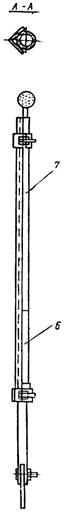 |
Рис. 4. Виброшпатель:
1 - вибрирующая пластана; 2 - пневмовибратор; 3 - штуцер; 4 - амортизатор;
5 - ручка; 6 - труба; 7 - шланг
4.44. Полотна армирующего материала укладывают вдоль или поперек балластного корыта с соблюдением требований п. 4.12. Отдельные полотна стыкуют, соблюдая нахлестку 3 - 5 см. Кромки полотен заводят под бортик балластного корыта, тщательно прикатывают роликом или шпателем.
4.45. Законченная тиоколовая гидроизоляция после завершения начального процесса самовулканизации должна быть резиноподобной и иметь гладкую, без просветов и вздутий, поверхность.
4.46. Защиту гидроизоляции выполняют после ее освидетельствования представителем заводской инспекции с соблюдением требований п.п. 4.83 - 4.89.
4.47. Резиноподобную рулонную гидроизоляцию (тип РПР, см. табл. 5) устраивают в балластном корыте пролетных строений железнодорожных мостов, строящихся преимущественно в III климатической зоне.
4.48. Резиноподобную рулонную гидроизоляцию выполняют с применением рулонных материалов включающих каучук: технической резины, вулканизованного бутизола и армогидробутила, предусмотренных в приложении 1, табл. 1, свойства которых приведены в приложении 1, табл. 6.
4.49. Резиноподобные рулонные материалы должны быть приклеены к изолируемому основанию и склеены между собой холодными клеящими составами типа мастик МББ-Х-120, .МРБ-Х-15, МБСП и клеем СВ-1, предусмотренными в приложении 1, табл. 1, составы которых приведены в приложении 1, табл. 7. Резиноподобный рулонный материал применяют в сочетании с совместимым с ним клеющим составом, приведенным в табл. 5.
4.50. Резиноподобную рулонную гидроизоляцию следует устраивать в помещениях, предусмотренных п. 1.9, при указанных в нем температурах.
4.51. На месте работ до их начала должен быть сосредоточен весь необходимый инвентарь для выполнения соответствующих операций, связанных с нанесением грунтовки, мастики и выполнением прикатки наклеиваемого резиноподобного рулонного материала. Из перечня оборудования, приведенного в приложении 3, нужно иметь:
емкость для доставки грунтовки и мастики;
травяные или волосяные щетки для очистки изолируемой поверхности и нанесения грунтовки или мастики;
гребки с резиновыми насадками для разравнивания слоя мастики, наносимого на горизонтальные поверхности;
фасонные шпатели с заградительным экраном для нанесения мастичных слоев в зоне расположения водоотводных трубок и навесного бортика по периметру блока;
цилиндрические валики для прикатки наклеиваемого материала;
линейки для замера полотен и нож для их раскроя.
4.52. У блоков пролетных строений должны быть оборудованы постоянные настилы, ограждения и лестницы в соответствии с правилами техники безопасности.
4.53. Гидроизолируемые поверхности должны быть подготовлены в соответствии с требованиями п.п. 4.6 - 4.8.
4.54. Готовность к гидроизоляции балластною корыта пролетного строения должна быть проверена и принята заводским инспектором.
4.55. Гидроизоляционные работы следует начинать с нанесения грунтовки на всю подготовленную поверхность балластного корыта, а после ее высыхания необходимо выполнить гидроизоляцию в местах ее сопряжения с водоотводными трубками и строповочными отверстиями в соответствии с указаниями п.п. 4.67 - 4.76.
4.56. По загрунтованной поверхности резиноподобные рулонные материалы наклеивают послойно. Наклеиваемые рулонные материалы до их применения должны быть выдержаны не менее 3 ч в помещении с температурой плюс 18 °С (± 5 °С).
4.57. Поверхность резиноподобного рулонного материала должна быть очищена от минеральной посыпки путем протирки полотна смоченной бензином ветошью. При наличии на его поверхности разделительной прослойки бумаги или полимерной пленки последние должны быть полностью отделены от полотна.
4.58. Холодные приклеивающие составы и составляющие их компоненты необходимо доставлять к месту работ в герметично закрытой таре.
Длительно хранившуюся в металлических барабанах (бочках) мастику и клей перед их применением необходимо взболтать перекатыванием тары.
Мастику или клей, хранившиеся во флягах и бидонах после снятия с них крышек, следует перемешать лопастью, принудительно вращаемой приводом от дрели.
4.59. Гидроизоляция балластного корыта пролетных строений железнодорожных мостов предусматривает выполнение работ в такой последовательности:
укладка подготовительного слоя с выдержкой его до достижения бетоном заданной прочности по указаниям п. 4.8 и п. 5.8;
грунтовка изолируемой поверхности с высушиванием ее до улетучивания растворителя в течение 30 мин;
устройство гидроизоляции в зоне водоотводных и строповочных трубок по указаниям п. п. 4.65 - 4.76 и размещение в них резиноподобных манжетных элементов, покрытых клеем (рис. 5);
наклейка полотен рулонного материала нижнего слоя с нахлесткой кромок 10 см при «конвертном» основании поперек пролетного строения, а при плоском основании - вдоль его;
наклейка полотен рулонного материала верхнего слоя с разбежкой стыков по отношению к стыкам нижнего слоя не менее 30 см и с соблюдением указанной нахлестки кромок;
нанесение на поверхность верхнего полотна рулонного материала слоя мастики или клея; посыпка поверхности мелким песком;
укладка защитного слоя с армированием цементно - песчаного раствора металлической сеткой;
окраска поверхности защитного слоя грунтовкой после приобретения им прочности не менее 50 кгс/см2;
выдача блоков на склад с прочностью защитного слоя не менее 70 % проектной марки летом и 80 % зимой.
Рис. 5. Резиноподобный манжетный элемент для сопряжения гидроизоляции с водоотводными и строповочными трубками
4.60. Приклеивающие мастики и клей после их нанесения выдерживают до появления отлипа на поверхности нанесенного слоя. Толщину клеящего слоя и время его выдержки до «отлипа» определяют экспериментально - испытанием на отрыв склеенных между собой полосок рулонного материала и принимают по максимальным показателям прочности, достигнутой при отрыве.
До появления на поверхности нанесенных слоев «отлипа» их ориентировочно следует выдерживать при применении клеящих мастик типа МРБ-Х-Т-15 и МББ-Х-120 от 10 до 20 мин, а при применении клея СВ-1 25 мин на бетоне и 5 мин на полотне резины.
4.61. Поверхность уложенных полотен резиноподобного рулонного материала первого слоя гидроизоляции покрывают слоем холодной приклеивающей мастики, на который укладывают ранее указанными приемами полотна верхнего гидроизоляционного слоя с соблюдением нахлестки по указаниям п. 4.59.
4.62. Полотна рулонного материала каждого уложенного слоя должны быть сразу же разглажены и прикатаны. Соответствующие операции рекомендуется выполнять гребком или легким ручным катком, направляя их сначала вдоль оси, затем под углом 30 - 35° от оси к кромке и, наконец, вдоль кромки.
Если при прикатке полотен под ними появились вздутия, последние следует проколоть шилом, возобновить прикатку до появления в местах проколов выдавленной мастики или клея.
4.63. Начинать укладку полотен рулонного материала следует от более низких точек изолируемой поверхности и соединять внахлестку с полотнами, расположенными выше по скату (см. п. 4.12). В местах сопряжения днища со стенками балластного корыта стыковать полотна рулонного материала запрещается.
4.64. Соединенные внахлестку стыки между полотнами рулонного материала должны быть тщательно прошпаклеваны слоем мастики или клея.
4.65. Гидроизоляция балластного корыта пролетных строений должна быть герметично сопряжена с водоотводными и строповочными трубками и в указанных местах выполнена с особой тщательностью.
4.66. Выполнение гидроизоляционных работ в местах расположения водоотводных и строповочных трубок должно опережать устройство основной гидроизоляции на поверхности балластного корыта пролетного строения.
4.67. Сопряжение гидроизоляции с указанными трубками должно быть, как правило, выполнено с применением резиноподобных манжетных элементов заводского изготовления.
Допускается по согласованию с МПС сопрягать гидроизоляцию с трубками послойным наклеиванием вокруг их раструба косынок, вырезанных из армирующего материала по п. 2.5, с заведением в раструб лепестков.
4.68. В местах сопряжения гидроизоляции с трубками секторные косынки армирующих тканей и закладные манжетные элементы должны быть всей поверхностью приклеены мастиками, используемыми для устройства основной гидроизоляции балластного корыта.
4.69. При любых типах гидроизоляции, устраиваемой с применением армирующей ткани, у водоотводных и строповочных трубок укладывают два дополнительных ее слоя.
При применении же резиноподобных рулонных материалов гидроизоляция может быть сопряжена и с помещаемым в раструб закладным манжетным элементом (см. рис. 5).
Послойное сопряжение гидроизоляции различных типов с трубками балластного корыта выполняют в соответствии со схемой, приведенной на рис. 6.
Рис. 6. Схема сопряжения слоев гидроизоляции различных типов с водоотводными трубками балластного корыта:
а - из секторных
лепестков; б - с резиновым закладным элементом; 1 - бетон;
2 - армирующий материал; 3
- битумная мастика; 4 - рулонный
изол;
5 - мастика МБР; 6 -
тиоколовая мастика; 7 - резиновый закладной элемент; 8 - рулонная
резина
4.70. Водоотводные и строповочные трубки (раструбы) с предварительно нанесенным на них антикоррозийным покрытием, соответствующим типу грунтовки, применяемой в конструкции основной гидроизоляции, должны быть, как правило, установлены в проектное положение до бетонирования плиты балластного корыта.
4.71. В примыкании к раструбу трубки подготовительный слой должен быть плавно закруглен и выполнен заподлицо с внутренней кромкой трубки.
4.72. Предназначенный для устройства гидроизоляции в местах расположения трубок армирующий материал, приведенный в приложении 1, табл. 4, должен быть предварительно раскроен на секторные косынки (рис. 7, а).
Нарезанные в требуемом комплекте косынки укладывают у места расположения трубок в такой последовательности:
первый слой приклеивающей мастики толщиной 1,5 - 2 мм наносят на предварительно загрунтованную бетонную поверхность. На слой мастики накладывают и всей поверхностью приклеивают раскроенные секторные косынки армирующего материала первого слоя (см. рис. 7, б) с нахлесткой кромок не менее 5 см в указанном порядке и заведением их концов в раструб трубки;
второй слой мастики наносят той же толщины и на него накладывают и приклеивают секторные косынки армирующего материала второго слоя с ранее указанными нахлесткой и порядком размещения секторов. Стыки секторов второго слоя смещают относительно стыков нижележащего первого слоя на 5 см.
Рис 7. Раскрой армирующего материала на сектора (а) и порядок их укладки (б) при устройстве сопряжения гидроизоляции с водоотводными и строповочными трубками:
I - линия разреза; II - линии перегиба секторов при заводке в раструб трубки;
1 - 8 последовательность при раскрое и укладке; - - - кромки стыкуемых секторов
4.73. Дополнительную гидроизоляцию, выполненную в местах расположения водоотводных и строповочных трубок, перекрывают гидроизоляционным материалом основной гидроизоляции, которую затем над трубкой разрезают крестообразно, секторные концы разреза последнего слоя отгибают, заводят в раструб и мастикой приклеивают к его поверхности (см. рис. 6).
4.74. Выполненную и заведенную в раструб водоотводных и строповочных трубок гидроизоляцию зажимают прижимным стаканом, а отверстия трубок перекрывают сверху предварительно окрашенными битумной грунтовкой решетчатой и сплошной крышками (рис. 8).
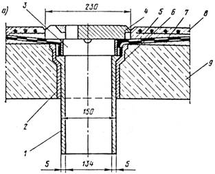
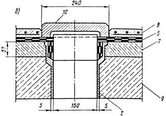
Рис. 8. Сопряжение гидроизоляции:
а - с водоотводными трубками; б - со строповочными отверстиями и перекрытие их крышками; 1 - трубка; 2 - раструбная трубка; 3 - прижимной стакан; 4 - решетчатая крышка; 5 - гидроизоляция; 6 - слой эпоксидной мастики; 7 - подготовительный слой; 8 - армированный защитный слой; 9 - блок; 10 - сплошная крышка
4.75. При установке водоотводных трубок в стесненных местах (рис. 9) раскрой полотен армирующего материала дополнительной гидроизоляции должен быть соответствующим образом скорректирован.
Рис. 9. Сопряжение гидроизоляции с трубками в стесненных местах пролетных строений:
1 - трубка; 2 - раструб; 3 - крышка; 4 - прижимной стакан; 5 - гидроизоляция;
6 - армированный защитный слой
4.76. Закладные манжетные элементы для сопряжения гидроизоляции с трубками должны быть по заказам заводов МЖБК изготовлены предприятиями резинотехнических изделий (РТИ) или ремонтно-прокатных баз (РПБ).
В качестве исходного сырья для их изготовления могут быть использованы резиновые смеси ИРП-1347; 6713; 7-6020, а также отходы бутизола и гидробутила.
Обрабатывать и подготавливать резиновые смеси рекомендуется на смесительных вальцах в течение 10 мин при температуре плюс 50 °С.
Изделия следует формовать с соблюдением технологического регламента в пресс-форме, приведенной на рисунке в приложении 6, на горячих прессах с выдержкой их в течение 30 - 35 мин при температуре от 140 до 145 °С.
Физико - механические показатели манжетных элементов приведены в табл. 6.
Таблица 6
|
Показатели |
Значения |
Методы испытаний |
|
Масса изделия, г, не менее |
700 |
Взвешивание |
|
Плотность, г/см3, не менее |
1,08 |
ГОСТ 267-60 |
|
Предел прочности при разрыве, кгс/см2, не менее |
100 |
|
|
Относительное удлинение, %, не менее |
500 |
|
|
Остаточное удлинение, %, не более |
40 |
|
|
Водопоглощение за 24 ч, г/м2, не более |
20 |
ГОСТ 2678-76 |
|
Температура хрупкости, °С, не выше |
-30 |
4.77. Гидроизоляция в местах примыкания к бортикам балластного корыта должна исключать возможность затекания воды под изоляционное покрытие.
4.78. В бортиках плиты балластного корыта по всему его периметру следует устраивать углубления или пазы для заводки и надежного защемления гидроизоляции (рис. 10).
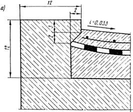
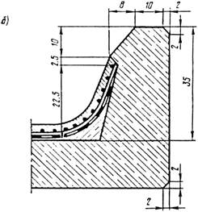
Рис. 10. Углубления по периметру балластного корыта для защемления гидроизоляции:
а - в примыкании к внутреннему бортику блока; б - в примыкании к внешнему бортику блока
4.79. Подготовительный слой у вертикальных и наклонных поверхностей бортиков должен быть выполнен из цементно - песчаного раствора или бетона, отвечающего требованиям п. 2.8, и иметь плавно закругленные поверхности, соответствующие требованиям п. 4.7.
4.80. Концы каждого слоя гидроизоляции должны быть последовательно заведены в углубления или пазы бортиков до упора в соответствующие скосы бетона и надежно приклеены к боковой поверхности бортиков по всему периметру балластного корыта.
4.81. Гидроизоляция, выполненная на наклонной поверхности и заведенная под бортик, должна быть покрыта и надежно защемлена защитным слоем, а рабочий шов бетона защитного слоя с бетоном бортика пролетного строения загерметизирован промазкой грунтовкой повышенной вязкости, содержащей до 20 % по массе порошка сухого цемента.
4.82. Деформационные швы между отдельными блоками пролетного строения, между смежными пролетными строениями и между пролетными строениями и устоями перекрывают против попадания в них балласта огрунтованными горячей битумной мастикой стальными листами толщиной не менее 8 мм с приваренными стержнями, препятствующими смещению листов относительно шва (рис. 11). Число стержней и расстояние между ними принимают по проекту с учетом длины пролета.
Продольные и поперечные швы устраивают на водоразделах так, чтобы вода от них отводилась уклонами гидроизоляции.
|
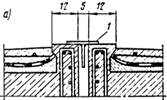 |
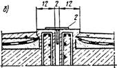 |
|
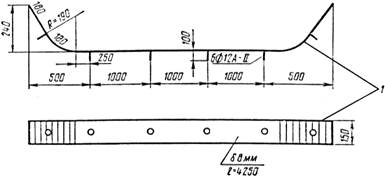 |
|
|
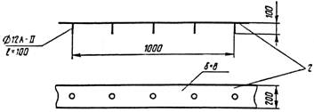 |
|
Рис. 11. Перекрытие деформационных швов железнодорожных пролетных строений:
а - поперечного шва; б - продольного шва; 1 - металлический лист перекрытия поперечного шва; 2 - то же продольного шва; О - места приварки стержней
4.83. Защитный слой гидроизоляции балластных корыт железнодорожных пролетных строений должен обеспечить плотное защемление гидроизоляции, предохранить ее от механических повреждений и продавливания балластом и обеспечить повышенную прочность гидроизоляции против тормозных и ударных нагрузок.
4.84. Защитный слой следует устраивать из мелкозернистого бетона, отвечающего требованиям п. 2.8, и армировать стальной сеткой с соблюдением требования п. 2.9. Защитный слой должен иметь толщину не менее 40 мм и обеспечивать проектные уклоны поверхностей для отвода воды.
4.85. В зависимости от типа выполненной на пролетном строении гидроизоляции защитный слой устраивают:
при битумной мастичной гидроизоляции - по поверхности отделочного слоя битумной мастики;
при рулонной дизельной гидроизоляции - по поверхности верхнего полотна изола;
при тиоколовой гидроизоляции - по поверхности верхнего слоя завулканизованной мастики;
при резиноподобной рулонной гидроизоляции - по поверхности верхнего слоя мастики или клея, посыпанной мелким сухим песком.
4.86. При устройстве защитного слоя последовательно выполняют:
укладку подслоя мелкозернистого бетона толщиной 2 - 2,5 см;
раскатку по уложенному подслою стальной армирующей сетки;
укладку поверх сетки бетона до проектной отметки с обеспечением (по шаблонам) необходимого проектного профиля и шероховатости поверхности;
нанесение грунтовки по свежеуложенной поверхности бетона или цементно - песчаного раствора пневмораспылением либо по отвердевшей его поверхности - щеткой или кистью;
нанесение по загрунтованной поверхности защитного слоя горячей битумной мастики толщиной 2 - 3 мм.
4.87. Выполненную и принятую заводской инспекцией резиноподобную рулонную гидроизоляцию для предотвращения возможности образования в ней вздутий рекомендуется сразу же пригрузить укладываемым поверх нее бетонным защитным слоем.
4.88. Мелкозернистый бетон подслоя и укладываемого поверх стальной сетки слоя следует тщательно уплотнить площадочными вибраторами, виброрейкой или другими механизмами, обеспечивающими требуемого его плотность и прочность.
4.89. Полотна стальной армирующей сетки при раскатке должны быть соединены между собой внахлестку не менее 10 см, а их концы закреплены вязальной проволокой.
5.1. Плиту проезжей части автодорожных и городских мостов и путепроводов гидроизолируют преимущественно в условиях строительной площадки. Тип гидроизоляции, конструкцию ее и необходимые материалы предусматривают проектом с учетом требований п. п. 2.1 и 3.1 - 3.3 и табл. 1 приложения 1 настоящей Инструкции.
5.2. Гидроизоляционные работы следует организовывать и выполнять в соответствии с технологической картой, предусматривающей их продолжительность, сроки выполнения и способы производства работ.
5.3. Гидроизоляционные работы в условиях строительной площадки выполняют при отсутствии атмосферных осадков и температуре наружного воздуха не ниже плюс 5 °С, в ветреную и дождливую погоду-под прикрытием легких разборных тентов или шатров.
В зимнее время и при температуре воздуха ниже плюс 5 °С гидроизоляционные работы следует выполнять под прикрытием сборно-разборных тепляков с обеспечением в них положительной температуры. Тепляки следует обогревать электрокалориферами; использование коксовых жаровен и других приборов с открытым пламенем для нагрева воздуха в тепляках воспрещается.
Гидроизоляционные работы с применением наплавляемых рулонных материалов (тип БРН) и резиноподобных рулонных (типа РПР) допускается выполнять при отрицательной температуре до минус 10 °С, а с применением полиэтиленовой пленки (тип ПЭР) - до минус 15 °С.
5.4. Гидроизоляционные работы в условиях строительного объекта выполняют поочередно на одной и другой половинах моста относительно продольной оси пролетного строения. Свободную половину пролетного строения используют для проезда по ней транспортных средств с материалами и для перемещения механизмов.
5.5. Необходимые для устройства гидроизоляции оборудование и инвентарь должны быть сосредоточены на объекте и укомплектованы согласно перечню, приведенному в приложении 3.
Требуемые для устройства гидроизоляции материалы должны быть сосредоточены на объекте в количестве, достаточном для выполнения всего объема работ.
5.6. К началу гидроизоляционных работ на проезжей части мостов должна быть завершена установка конструкций деформационных швов, водоотводных трубок, ограждающих и прочих устройств в соответствии с технологической последовательностью, предусмотренной проектом.
5.7. Устройству гидроизоляции должна предшествовать подготовка изолируемого основания приданием ему проектного профиля путем укладки выравнивающего слоя толщиной не менее 30 мм с учетом требований п.п. 2.8 - 2.10. На поверхности выравнивающего слоя не должно быть раковин, острогранных включений, бугров и других дефектов. Раковины устраняют заделкой цементно - песчаным раствором, бугорчатые неровности - механической шлифовкой. В местах пересечения изолируемых поверхностей устраивают выкружки радиусом закругления 10 - 15 см.
Подготовленное под гидроизоляцию основание должно быть принято с составлением акта на скрытые работы.
5.8. К началу выполнения гидроизоляционных работ прочность раствора или бетона выравнивающего слоя должна быть не менее 50 кгс/см2 (5 МПа).
5.9. Перед устройством гидроизоляции поверхность выравнивающего слоя должна быть очищена от мусора, промыта струей воды и высушена.
5.10. Сухую и чистую поверхность выравнивающего слоя покрывают грунтовкой, соответствующей принятому в проекте типу гидроизоляции.
Грунтовку в условиях строительной площадки изготавливают с соблюдением требований, изложенных в приложении 1, табл. 2.
Огрунтовка изолируемого основания, покрытого снегом или льдом, запрещается.
5.11. Для нанесения грунтовки на изолируемую поверхность следует применять пневмофорсунки или пистолеты - распылители с красконагнетательными бачками (приложение 3, табл. 1).
5.12. Интервал между нанесением грунтовки и началом устройства гидроизоляционных слоев должен быть не менее 2 ч и не более 16 ч.
5.13. Гидроизоляционные работы начинают с изоляции карнизных свесов, водоотводных трубок, лотков и других элементов водоотвода, устройства примыкания к осветительным столбам, конструкциям тротуаров, деформационных швов, ограждающих устройств и к прочим элементам мостового полотна.
5.14. Проезжую часть гидроизолируют полосами, идущими вдоль пролетного строения, начиная от пониженных мест изолируемой поверхности к более высоким, устраивая стыки перпендикулярно скату.
5.15. Битумную мастичную гидроизоляцию (см. табл. 4) устраивают послойно с применением горячих битумных мастик марок и составов, соответствующих климатической зоне сооружаемого объекта, и полотен армирующего материала (приложение 1, табл. 3, 4).
5.16. Битумную мастичную гидроизоляцию типа БМ-1 (см. табл. 5), армируемую льно-джуто-кенафной или стеклянной тканями, выполняют путем розлива и разравнивания гребками или щетками горячих мастик, с послойной наклейкой на них разматываемых полотен ткани или с использованием агрегата, приведенного на рисунке в приложении 7.
5.17. Битумную мастичную гидроизоляцию типа БМ-2 (см. табл. 5), армируемую стеклосетками, выполняют механизированным послойным нанесением горячих мастик с приклейкой армирующего материала воздействием ударной силы струи наносимой мастики.
5.18. Битумную мастичную гидроизоляцию устраивают, соблюдая нижеуказанную последовательность работ:
приготовление битумной мастики и доставка ее к месту работ;
нанесение на огрунтованную бетонную поверхность первого слоя горячей мастики способом, соответствующим типу гидроизоляции (см. п.п. 5.16, 5.17);
раскатка по застывшему слою мастики стеклянных сеток с местной прихваткой полотен горячей мастикой или наклейка на горячую мастику льно-джуто-кенафной или стеклянной ткани и прикатка их катками массой до 80 кг;
нанесение второго слоя горячей мастики;
укладка второго армирующего слоя;
нанесение третьего слоя битумной мастики;
посыпка поверхности гидроизоляции сухим просеянным песком, нагретым до плюс 60 °С (допускается посыпка сухим просеянным цементом);
укатка выполненной гидроизоляции (при температуре мастики на поверхности плюс 15 - 20 °С) гружеными автомашинами с чистыми протекторами массой до 5 т, со скоростью не более 1 км/ч;
устройство защитного слоя.
5.19. Битумные горячие мастики готовят при малых объемах работ в условиях строительства в соответствии с требованиями приложения 5, а при больших объемах работ - на специальных битумных базах и наносят в соответствии с правилами, изложенными в приложении 8.
5.20. В местах примыкания гидроизоляции к элементам мостового полотна (см. п. 5.13) устраивают дополнительный гидроизоляционный слой. Горячую битумную мастику с температурой 160 - 180 °С наносят щеткой, отдельные полотна армирующего материала наклеивают вручную с прижатием шпателем или гребком при обеспечении нахлестки стыкуемых кромок не менее 5 см.
5.21. Армирующий материал укладывают с соблюдением следующих приемов и правил:
полотна армирующего материала следует расстилать на проезжей части вдоль оси моста с сохранением направления расстилки в последующем слое;
перекрестное размещение полотен в смежных слоях допускается при изоляции конструкций деформационных швов;
полотна должны соединяться с нахлесткой кромок 5 - 10 см в продольных и 15 - 20 см в поперечных стыках;
продольные стыки полотен в смежных слоях гидроизоляции должны быть расположены вразбежку и находиться на расстоянии не менее 30 см один от другого.
В случае неожиданного увлажнения (дождем) раскатанных полотен стеклосетки гидроизоляционные работы должны быть приостановлены и возобновлены после их просушки.
5.22. При устройстве гидроизоляции в неустойчивую дождливую погоду работы с предварительной расстилкой стеклянных сеток не допускаются. В этом случае гидроизоляцию выполняют на малых участках приемами, указанными применительно к типу БМ-1 по п. 5.16, и заканчивают нанесением верхнего слоя горячей мастики.
5.23. Выполненная гидроизоляция должна быть гладкой, сплошной, без видимых нитей армирующего материала и вздутых мест.
5.24. Битумную рулонную гидроизоляцию (тип БРН, см. табл. 5) устраивают из наплавляемых материалов промышленного производства (приложение 1, табл. 5).
5.25. Гидроизоляцию типа БРН устраивают двухслойной с применением гидростеклоизола гидроизоляционного, фольгоизола или мостоизола.
На проезжей части разрезных систем допускается устройство покрытий, включающих один слой гидростеклоизола подкладочного или стеклорубероида, а также только стеклорубероидных покрытий двухслойных в I и трехслойных во II климатических зонах.
5.26. Гидроизоляцию с применением рулонных материалов устраивают в такой последовательности:
нанесение на изолируемое основание битумной грунтовки;
наклейка способом оплавления первого гидроизоляционного слоя из гидростеклоизола гидроизоляционного;
наклейка второго слоя рулонного материала;
укладка мастичного слоя при применении во втором слое бутизола или гидробутила, посыпка поверхности песком или цементом (см. п. 5.18) или нанесение грунтовки поверх фольги при применении фольгоизола;
устройство защитного слоя.
5.27. Полотна рулонных материалов необходимо укладывать в соответствии с указаниями п.п. 5.14 и 5.21.
5.28. Наплавляемый рулонный материал укладывают с оплавлением нижней поверхности битумного покровного слоя и немедленным прижатием оплавленного участка роликовым катком.
5 29. Оплавлять приклеиваемую поверхность утяжеленных рулонных материалов при малых объемах работ и в примыканиях следует с применением однофакельных горелок типа ГВПН (рис 12), а при больших объемах - с применением многофакельных горелок (рис. 13), включенных в самоходный агрегат (рис. 14). При производстве работ необходимо соблюдать правила эксплуатации, приведенные в приложениях 9 и 10.
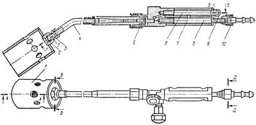
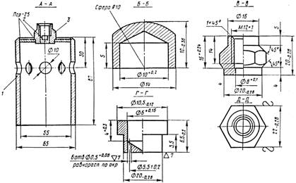
Рис. 12. Горелка воздушно-пропановая нагревательная (ГВПН):
1 - колпак; 2 - вставка; 3 - штуцер; 4 - наконечник; 5 - инжектор; 6 - кислородная камера; 7 - латунная трубка; 8 - ацетиленовая камера; 9 - заглушка;
10 - штуцер к шлангу
Рис 13. Горелка воздушно-пропановая нагревательная линейная многофакельная (ГВПЛ):
1 - штуцер для присоединения запальника; 2 - ствол; 3 - запальник;
4 - распределительный коллектор; 5 - форсунки; 6 - опорные колеса
Рис. 14. Самоходный агрегат для безмастичной приклейки рулонных материалов:
1 - дифференциальный каток; 2 - электрозажигалка; 3 - кожух для баллона с пропаном; 4 - рукоятка скоростей; 5 - руль; 6 - тормозное устройство;
7 - направляемый рулонный материал; 8 - барабан для намотки рулона;
9 - рычаг подъема горелки; 10 - колесо; 11 - форсунки горелки ГВПЛ;
12 - прикатывающий каток; 13 - рычаг подъема катка
5.30. Оплавление битумного покровного слоя рулонного материала производится одновременно с нагревом основания или покровного слоя ранее наклеенного материала. Признаком достаточности нагрева покровного слоя служит появление валика капельножидкой битумной мастики впереди укладываемого рулона.
5.31. Воздействие пламени на оплавляемую поверхность рулонного материала, во избежание деструкции битумного покровного слоя, должно быть кратковременным при непрерывном перемещении факела нагревательных горелок.
Горелки, должны быть удалены от поверхности рулонного материала не менее чем на 7 и не более чем на 15 см.
Местный сосредоточенный нагрев оплавляемой поверхности рулонного материала запрещается.
5.32. Вздутия, образовавшиеся на поверхности гидроизоляционного слоя в процессе работы, необходимо вскрыть крестообразным разрезом, углы отвернуть, оплавить, вернуть в первоначальное положение и прикатать. Сверху приклеить заплату с перекрытием мест разреза на 10 - 15 см.
5.33. Для мастичного слоя в конструкции битумной рулонной гидроизоляции, включающей резинобитумные материалы, следует применять горячую битумную мастику (приложение 1, табл. 3).
5.34. Выполненная гидроизоляция должна быть надежно защищена в соответствии с требованиями п.п. 5.64 - 5.65. Для защитного слоя, устраиваемого поверх фольгоизола, следует применять асфальтобетон. Контакт фольгоизола и цементобетона не допустим.
5.35. Резиноподобную гидроизоляцию устраивают путем послойного наклеивания на подготовленное основание безосновных рулонных невулканизованных или полувулканизованных резиноподобных материалов: бутизола или гидробутила (приложение 1, табл. 6).
5.36. Резиноподобные рулонные материалы следует наклеивать горячей битумной мастикой (приложение 1, табл. 3) и холодными мастиками промышленного производства: МРБ-Х-15, МББ-Х-120 (приложение 1, табл. 1) или другими клеящими составами с аналогичными свойствами.
5.37. Резиноподобные рулонные материалы необходимо доставлять к месту работ в заводской упаковке и до применения хранить под навесом, предотвращающим увлажнение их поверхности. Перед применением рулоны должны быть раскатаны и освобождены от противоадгезионного покрытия, инвентарного полотна или разделительной прослойки бумаги, пленки и т.п.
5.38. Холодные приклеивающие мастики следует доставлять к месту работ в заводской герметически закрытой таре. Хранить их следует в помещении с температурой не менее плюс 10 °С. Хранившуюся длительное время мастику перед ее применением необходимо перемешать приемами, приведенными в п. 4.25.
5.39. Гидроизоляцию с применением бутилкаучуковых материалов устраивают в такой последовательности:
нанесение на загрунтованную изолируемую поверхность слоя холодной мастики;
выдержка нанесенного слоя мастики «до отлипа» (время устанавливается экспериментально);
укладка полотна рулонного материала на мастику с прикаткой его поверхности;
нанесение второго слоя мастики;
укладка второго слоя рулонного материала;
нанесение слоя мастики;
присыпка высохшей «до отлипа» поверхности песком (см. п. 5.18);
устройство защитного слоя.
5.40. Приклеивающую мастику при больших объемах работ рекомендуется наносить пневмораспылением с использованием агрегатов, снабженных воздухораспыливающей форсункой (приложение 3, табл. 1).
5.41. На поверхность проезжей части, покрытую клеящим слоем мастики, полотна рулонных материалов следует укладывать в соответствии с требованиями п.п. 5.14 и 5.21.
5.42. При устройстве гидроизоляции из резиноподобных материалов холодную мастику наносят слоем предусмотренной в таблице 5 толщины. Уложенное полотно прикатывают катком или прижимают шпателем вначале вдоль его оси, затем от оси под углом 30 - 35° и, наконец, вдоль кромок. На поверхности уложенного материала не должно быть вздутий, складок, особенно в стыках. Обнаруженные в процессе прикатки материала вздутия прокалывают шилом и прикатку продолжают до появления мастики или клея в проколах. Швы стыкуемых полотен рулонного материала каждого слоя дополнительно промазывают слоем мастики.
5.43. Полиэтиленовую гидроизоляцию устраивают по неогрунтованной поверхности выравнивающего слоя.
5.44. Полиэтиленовую рулонную гидроизоляцию выполняют приклейкой только в местах примыкания к вертикальным и наклонным поверхностям.
5.45. Применяемая для устройства гидроизоляции полиэтиленовая пленка должна быть стабилизирована сажей, эластична в интервале отрицательных температур до минус 60 °С и иметь толщину не менее 150 мк.
5.46. Конструкцию гидроизоляции выполняют в соответствии с табл. 5 (тип ПЭР) и применяя материалы, приведенные в табл. 1 приложения 1. Работы выполняют в такой последовательности:
раскатка подстилающего слоя беспокровного рулонного материала, например, пергамина;
раскатка первого слоя полиэтиленовой пленки;
сварка стыков полиэтиленовой пленки и приклейка кромок полотна в примыканиях к элементам мостового полотна;
раскатка второго слоя полиэтиленовой пленки;
сварка стыков второго слоя и приклейка кромок в примыканиях;
раскатка слоя рулонного материала гидроизола или пергамина;
устройство защитного слоя.
5.47. В местах примыкания к элементам мостового полотна полиэтиленовую пленку приклеивают кумаронокаучуковой мастикой КН-2 или клеем 88 на основе найрита (табл. 1 приложения 1).
5.48. Рулонный материал подстилающего слоя раскатывают поперек проезжей части моста и укладывают с нахлесткой 5 - 7 см в сторону продольного уклона. Укладываемые полотна во избежание их срыва ветром следует в отдельных местах прихватывать слоем мастики.
5.49. Укладываемые полотна полиэтиленовой пленки наращивают путем их сварки, обеспечивая герметичность стыков.
Кромки полотнищ сваривают импульсным полозом, характеристики которого приведены в приложении 11.
5.50. Стыкуемые кромки полотен пленки сваривают Т - образным швом при одностороннем контактном нагреве с последующим отгибом образующегося гребня. Ширина отгибаемых для стыкования кромок должна составлять 3 - 5 см, а высота отгибаемого гребня - не менее 3 см.
Кромки стыкуемых полотен следует сваривать на подведенной под них доске, покрытой сложенной в четыре слоя байкой, через прокладку из фторопласта-4 по ГОСТ 10097-72, толщиной 100 - 200 мк.
5.51. При одностороннем контактном нагреве стыкуемые кромки пленок сваривают при скорости перемещения нагревателя от 2 до 10 м/мин, зависящей от толщины пленки. Режим сварки с учетом толщины пленки принимают в соответствии с рекомендациями, приведенными в приложении 11.
5.52. Свариваемые поверхности пленки рекомендуется предварительно зашкурить наждачной бумагой и протереть ветошью, смоченной этиловым спиртом или ацетоном. Касаться зачищенных поверхностей грязными руками и протирать их масляной или пыльной ветошью не допускается.
5.53. При выявлении на поверхности пленки отверстия или прокола на дефектное место должна быть наложена заплата, промазанная мастикой КН-2 слоем толщиной 1 - 1,5 мм по периметру на расстоянии 10 - 15 см от дефектного места. Для ремонта дефектного места может быть также применена полиэтиленовая лента с липким слоем. Ленту накладывают с двух сторон.
5.54. Герметичность основной гидроизоляции в местах сопряжения ее с водоотводными трубками (рис. 15) пролетных строений автодорожных мостов и путепроводов должна обеспечиваться устройством дополнительных слоев гидроизоляции в соответствии с требованиями п.п. 4.67 - 4.69, 5.13.
Рис. 15. Устройство сопряжения гидроизоляции с водоотводной трубкой на пролетных строениях автодорожных мостов:
1 - прижимной стакан (воронка); 2 - водоприемная решетка; 3 - покрытие;
4 - защитный слой; 5 - гидроизоляция; 6 - выравнивающий слой;
7 - плита пролетного строения; 8 - трубка; 9 - отверстия для стока воды
5.55. При битумной рулонной гидроизоляции из наплавляемых материалов допускается устраивать дополнительную изоляцию из гидростеклоизола гидроизоляционного или мостоизола, предварительно раскроив их и уложив в соответствии с указаниями п.п. 4.72 и 4.73. При этом отдельные секторные косынки гидростеклоизола или мостоизола следует наклеивать способом оплавления битумного покровного слоя с использованием однофакельных горелок типа ГВПН.
5.56. Гидроизоляцию из резиноподобных рулонных материалов в местах сопряжения с водоотводными трубками выполняют с применением манжетных закладных элементов (см. рис. 5 и 6), устанавливаемых на холодных мастиках, применяемых при устройстве гидроизоляции.
5.57. Гидроизоляцию в сопряжении с водоотводными трубками при применении полиэтиленовой пленки выполняют путем вдавливания ее в раструб воронки. Для этого пленку доводят до пластического состояния гладко обработанным сосудом, наполненным индустриальным маслом, нагретым до 170 °С; наружные размеры сосуда должны быть меньше на 2 - 3 мм диаметра раструба трубки. После установки, в раструб прижимного стакана на мастике КН-2 поверхность пленки вокруг трубки на расстоянии 10 - 15 см покрывают мастикой.
5.58. В пролетных строениях автодорожных мостов и путепроводов в местах примыкания к деформационным швам, имеющим непрерывный металлический компенсатор на всю ширину моста, гидроизоляцию заканчивают у кромки зазора, не заводя в петлю компенсатора. Край гидроизоляции должен быть надежно приклеен к компенсатору.
В случае применения компенсатора, составленного по длине шва из отдельных отрезков, гидроизоляция должна быть заведена в петлю компенсатора (рис. 16), а стыки его на ширине 0,5 - 1 м перекрыты дополнительным гидроизоляционным слоем.
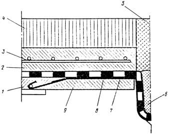
Рис. 16. Устройство гидроизоляции в местах примыканий к конструкции деформационного шва с металлическим компенсатором:
1, 9 - выравнивающий слой соответственно первой и второй очереди;
2 - защитный слой; 3 - металлическая сетка; 4 - асфальтобетонное покрытие;
5, 6 - заполнение шва; 7 - латунный компенсатор, промазанный двумя слоями битумного лака; 8 - гидроизоляция
5.59. В сопряжениях с конструкциями деформационных швов, имеющих металлическое окаймление или цементобетонные приливы (рис. 17), выполняют двухслойно - армированную битумную мастичную гидроизоляцию (тип БМ-1, см. табл. 5), независимо от типа основной гидроизоляции на проезжей части.
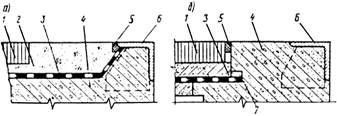
Рис. 17. Устройство гидроизоляции в местах примыкания к конструкции деформационного шва:
а - с металлическим окаймлением; б - с бетонным приливом; 1 - покрытие;
2 - защитный слой; 3 - гидроизоляция; 4 - бетонный прилив; 5 - мастика;
6 - окаймление; 7 - пороизол
Гидроизоляцию заводят под козырек и выводят на горизонтальный участок длиной не менее 50 см с нахлесткой в стыке не менее 10 см.
При окаймлении, примыкающем к асфальтобетонному покрытию, гидроизоляция на наклонном участке должна быть защищена слоем цементно - песчаного раствора толщиной не менее 10 мм.
5.60. На автодорожных пролетных строениях гидроизоляцию устраивают на полную их ширину.
В случае применения тротуаров в повышенном уровне относительно проезда под тротуарами устраивают битумную мастичную неармированную гидроизоляцию.
В примыкании к тротуарному блоку выполняют битумную мастичную двухслойно - армированную гидроизоляцию, которую поднимают на 10 см выше уровня проезда и заводят в штрабу (рис. 18, а).
В месте примыкания гидроизоляцию надежно приклеивают к несущей конструкции.
|
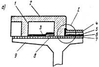 |
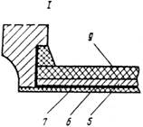 |
|
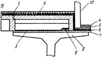 |
|
Рис. 18. Устройство примыкания гидроизоляции к блокам тротуаров:
а - в повышенном уровне; б - с приставным бортовым камнем; 1 - тротуарный блок;
2 - покрытие тротуара; 3 - битумная мастика; 4 - покрытие; 5 - защитный слой;
6 - гидроизоляция проезжей части; 7 - выравнивающий слой; 8 - прилив;
9 - пролетное строение; 10 - бортовой камень
5.61. В случае применения бортовых камней, не связанных с тротуарными блоками, гидроизоляцию следует устраивать поверх тротуарного блока, при этом бортовой камень должен быть установлен на защитный слой (см. рис. 18, б).
5.62. При устройстве тротуаров в уровне проезжей части тротуарные блоки следует устанавливать на выполненный поверх гидроизоляции защитный слой.
В зоне установки стоек металлических ограждающих устройств в основной гидроизоляции проезжей части устраивается вырез, который перекрывают двуслойно - армированной битумной мастичной гидроизоляцией с заведением ее на стойку.
5.63. В случае устройства на проезжей части рулонной гидроизоляции примыкания к тротуарным блокам выполняют преимущественно с применением битумной мастичной двуслойно - армированной гидроизоляции (тип БМ-1, см. табл. 5), которую заводят под рулонную гидроизоляцию проезжей части на ширину не менее 0,5 м с обеспечением герметичности стыка.
5.64. Защитный слой гидроизоляции пролетных строений автодорожных мостов и путепроводов устраивают в соответствии с требованиями п. 2.8 из мелкозернистого или песчаного бетона, армированного металлической сеткой в соответствии с п. 2.9.
По гидроизоляции, включающей фольгоизол и в других предусмотренных проектом случаях, защитный слой устраивают из мелкозернистого песчаного асфальтобетона, отвечающего требованиям п. 2.10.
5.65. При устройстве защитного слоя следует принимать меры, предотвращающие повреждение гидроизоляции. Транспортные средства с материалами для защитного слоя перемещают по дорожкам из рубероида с минеральной посыпкой. Материал защитного слоя выгружают на переносные щиты, предварительно уложенные на готовую гидроизоляцию.
6.1. Гидроизоляцию звеньев водопропускных труб и лотков выполняют, как правило, в заводских условиях. Такие транспортируемые звенья с гидроизоляцией должны иметь защиту от механических повреждений в процессе хранения, транспортирования и монтажа, для чего поверх битумного мастичного слоя гидроизоляции наклеивают дополнительный слой крафт-бумаги (ГОСТ 2227-65) или оберточной бумаги марки А (ГОСТ 8273-75). Бумага должна плотно прилегать к мастике и быть прочно приклеена с нахлесткой кромок 2 - 3 см.
6.2. Работы по гидроизоляции звеньев водопропускных труб и стыков между ними на стройплощадке следует выполнять при отсутствии атмосферных осадков и положительной (не ниже плюс 5 °С) температуре воздуха, а в зимнее время - с соблюдением требований п. 5.3.
Зимой устройство гидроизоляции возможно без тепляков на подогреваемых изнутри звеньях водопропускных труб с закрытыми торцами.
6.3. Гидроизоляцию водопропускных труб и лотков устраивают в соответствии с проектом, предусматривающим рекомендованные конструктивные решения (см. табл. 5).
6.4. В двухочковых круглых трубах на фундаментах пространство между звеньями заполняют тощим бетоном, придают бетонной поверхности уклоны; в бесфундаментных трубах пространство между трубами заполняют дренирующим грунтом.
6.5. Устройству гидроизоляции должна предшествовать очистка бетонной поверхности от грязи и конопатка швов.
6.6. Швы между торцами звеньев и блоками оголовков конопатят, для чего в зазор закладывают жгуты из пакли, пропитанной раствором битума в бензине (состава 1:1 по массе); жгуты утапливают на 1 - 1,5 см, зазор над ними заполняют битумной мастикой. С внутренней стороны шов заполняют цементно - песчаным раствором (состава 1:3). В пределах «дуги опирания» звена трубы зазор конопатят жгутом пакли также изнутри и заделывают цементно - песчаным раствором.
Все входящие углы в примыканиях конструктивных элементов трубы заполняют цементно - песчаным раствором с устройством плавных закруглений радиусом 10 - 15 см.
6.7. На сборных железобетонных водопропускных прямоугольных трубах под железную дорогу применяют двухслойно - армированную битумную (типа БМ-1, табл. 5) или двухслойную изольную рулонную (тип ИР, табл. 5) гидроизоляцию, устраиваемую по поверхности ригеля и стенам с доведением ее ниже основания звена или обреза фундамента (рис. 19).
Рис. 19. Гидроизоляция типа БМ-1 (оклеечная) для сборных железобетонных прямоугольных водопропускных труб под железную дорогу:
а - общий вид; б - стены и ригель; в - стык между звеньями ригеля;
г - стык между звеньями стенки; 1 - звено трубы; 2 - две армирующие прослойки ткани; 3 - цементно - песчаный раствор марки 150; 4 - асбестоцементные плиты защиты толщиной 8 - 10 мм по ГОСТ 18124 - 75; 5 - три слоя битумной мастики толщиной 1,5 - 2 мм каждый; 6 - битумная грунтовка; 7 - битумная мастика, включающая добавку 25 - 30 в.ч. микроасбеста по ГОСТ 12871 - 67 сорта 7;
8 - пакля, пропитанная битумом
6.8. На сборных железобетонных водопропускных трубах под автомобильную дорогу, возведенных из прямоугольных звеньев, отнесенных при испытании на водонепроницаемость к высшей категории качества, применяют двухслойную битумную неармированную гидроизоляцию обмазочного типа (БМ-3, см. табл. 4), устраиваемую по поверхности ригеля и стен (рис. 20).
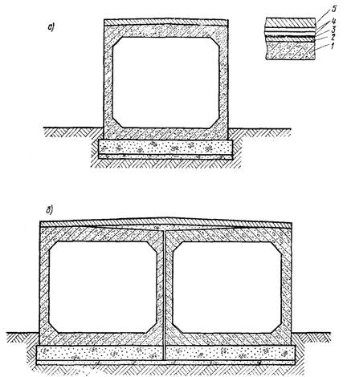
Рис. 20. Гидроизоляция типа БМ-3 (обмазочная) для сборных железобетонных прямоугольных водопропускных труб из
звеньев первой категории качества под автомобильные дороги:
а - одноочковых; б - двухочковых; 1 - звено трубы; 2 - подготовительный слой;
3 - битумная грунтовка; 4 - два слоя битумной мастики толщиной 2,5 - 3 мм;
5 - защитный слой толщиной 30 мм цементного бетона марки М-150
6.9. На сборных железобетонных водопропускных трубах под автомобильную дорогу, возведенных из прямоугольных звеньев, не имеющих паспорта или не отнесенных к высшей категории качества, гидроизоляцию применяют двухслойно - армированную битумную оклеенного типа (БМ-1) или двухслойную битумно - резиновую (типа ИР) гидроизоляцию, выполняемую по поверхности ригеля и стен (рис. 21).
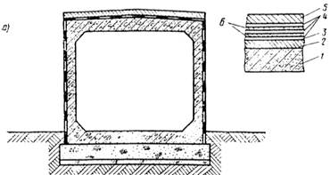
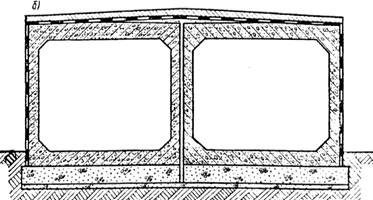
Рис. 21. Гидроизоляция типа БМ-1 (оклеечная) для сборных железобетонных прямоугольных водопропускных труб из беспаспортных звеньев под автомобильные дороги:
а - одноочковых; б - двухочковых; 1 - звено трубы; 2 - подготовительный слой;
3 - битумная грунтовка; 4 - три слоя битумной мастики толщиной 1,5 мм каждый;
5 - защитный слой толщиной 30 мм цементобетона марки М-150; 6 - два слоя армирующего материала между ними
6.10. На сборных бетонных прямоугольных водопропускных трубах под железную и автомобильную дороги применяют двухслойно - армированную битумную гидроизоляцию (типа БМ-1) или двухслойную битумно-резиновую (типа ИР), которую устраивают по поверхности плиты перекрытия и насадок.
На поверхности стен и боковых граней фундамента, соприкасающихся с грунтом, устраивают неармированную двухслойную битумную гидроизоляцию типа БМ-3 (рис. 22).
Рис 22 Гидроизоляция сборных бетонных прямоугольных водопропускных труб типа БМ-1 (оклеечная) па поверхностях плит перекрытия и насадок и типа БМ-3 (обмазочная) на поверхностях стен и боковых гранях фундаментов:
а - одноочковых; б - двухочковых; 1 - изолируемый элемент; 2 - подготовительный слой; 3 - битумная грунтовка; 4 - три слоя битумной мастики толщиной 1,5 - 2 мм каждый; 5 - две армирующие прослойки ткани; 6 - защитный слой толщиной 30 мм
из цементобетона марки 150; 7 - два слоя битумной мастики толщиной 2,5 - 3 мм
6.11. На сборных железобетонных водопропускных круглых трубах под автомобильную дорогу, возведенных из секций, отнесенных при испытании на водонепроницаемость к высшей категории качества, применяют двухслойную битумную неармированную гидроизоляцию обмазочного типа (БМ-3, см. табл. 4), устраиваемую по поверхности секции и по поверхности заполнения между ними с заведением на фундамент (рис. 23, а). На тех же трубах, возведенных из секций, не отнесенных к высшей категории качества, применяют двухслойно-армированную гидроизоляцию, предусмотренную п. 6.9 и выполняемую по поверхности (см. рис. 23, б).
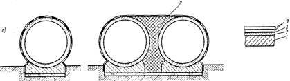
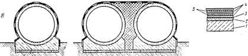
Рис. 23. Гидроизоляция сборных железобетонных круглых водопропускных труб под автомобильную дорогу:
а - типа БМ-3 (обмазочная) при звеньях высшей категории качества; б - типа БМ-1 (оклеечная) при звеньях беспаспортных и звеньях первой категории качества;
1 - звено трубы; 2 - подготовительный слой; 3 - битумная грунтовка; 4 - три слоя битумной мастики толщиной 1,5 - 2 мм; 5 - две прослойки армирующей ткани;
6 - заполнение; 7 - два слоя битумной мастики толщиной 2,5 - 3 мм
6.12. Гидроизоляцию типа БМ-1 на водопропускных трубах устраивают по загрунтованной битумным лаком поверхности бетона послойным нанесением (см. табл. 5) горячей битумной мастики марки Ю-II (по п. 2.4) и армирующих материалов (см. п. 2.5).
6.13. Работы по устройству гидроизоляции типа БМ-1 должны выполняться приемами, предусмотренными в п. п. 4.17 - 4.18.
6.14. Гидроизоляцию типа ИР (см. табл. 5) устраивают на водопропускных трубах и лотках нанесением на загрунтованную поверхность холодной мастики изол и наклеиванием на нее полотен рулонного изола.
Работы по устройству гидроизоляции типа ИР необходимо выполнять без ее армирования, соблюдая правила и приемы, предусмотренные в п.п. 4.24 - 4.33.
6.15. На водопропускных трубах мастичную неармированную гидроизоляцию типа БМ-3 следует устраивать по загрунтованной битумным лаком поверхности бетона с нанесением за 2 раза слоя горячей битумной мастики марки Ю-II толщиной около 3 мм или слоя холодной изольной мастики марки МРБ - Х толщиной около 2,5 мм.
6.16. Стыки между звеньями перекрывают битумной мастичной двухслойно - армированной гидроизоляцией полосами шириной 25 - 30 см симметрично относительно оси стыка (рис. 24, а). На бесфундаментных трубах гидроизоляцию, перекрывающую стыки между звеньями, устраивают с компенсационным выгибом кверху (см. рис. 24, б).
Рис. 24. Устройство гидроизоляции над стыками сборной круглой железобетонной водопропускной трубы:
а - на фундаменте; б - без фундамента; 1 - секция фундамента; 2 - звено;
3 - перекрытие деформационного шва; 4 - перекрытие стыка между звеньями;
5 - гидроизоляция, выполненная в пределах звена; 6 - расшивка швов цементным раствором; 7 - пакля, пропитанная битумом; 8 - деревянная прокладка толщиной 3 см, пропитанная раствором битума
6.17. В стыках труб на фундаменте над деформационными швами дополнительно устраивают компенсатор в виде двухслойно - армированной полосы битумной мастичной гидроизоляции, каждый слой армирующей ткани которой утапливают внутрь стыка (рис. 25, а, б).
В деформационных швах между секциями фундаментов водопропускных труб в процессе монтажа должны быть вертикально установлены по торцам деревянные прокладки толщиной 3 см (см. рис. 24, а), пропитанные раствором битума в бензине.
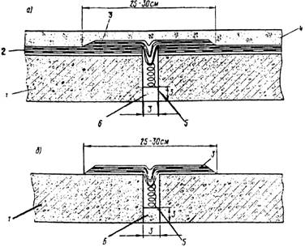
Рис. 25. Устройство гидроизоляции над деформационными межсекционными швами труб на фундаменте:
а - при битумной мастичной армированной гидроизоляции типа БМ-1;
б - при битумной неармированной мастичной гидроизоляции типа БМ-3; 1 - звено;
2 - гидроизоляция звена; 3 - гидроизоляция деформационного шва; 4 - защитный слой из цементно - песчаного раствора; 5 - пакля, пропитанная битумом; 6 - расшивка цементно - песчаным раствором
6.18. Гидроизоляцию наружных поверхностей устоев мостов и подпорных стенок выполняют неармированной по типу БМ-3 (см. табл. 5).
Битумные мастики, указанные в приложении 1, табл. 3, допускается применять в холодном состоянии после предварительного их разжижения растворителем, добавляемым к ним в количестве 25 - 30 %.
6.19. На ригелях и плитах перекрытия прямоугольных и сводах круглых труб армированную битумную мастичную гидроизоляцию защищают бетоном или цементно - песчаным раствором марки 150 слоем толщиной 30 мм, укладываемым непрерывно по всей длине трубы. На остальной части труб гидроизоляцию защищают с учетом указаний п. 3.11.
6.20. Засыпку водопропускных труб, устоев мостов и подпорных стенок выполняют, соблюдая меры, предотвращающие повреждение гидроизоляции.
7.1. Качество гидроизоляции контролируют ответственные за это лица завода или строительной организации.
В заводских условиях гидроизоляция в балластных корытах пролетных строений и устоев мостов под железную дорогу должна быть принята заводской инспекцией Главмостостроя пооперационно и в законченном виде.
Гидроизоляция засыпаемых поверхностей опор мостов, водопропускных труб, их оголовков и подпорных стен, выполненная на месте строительства, должна быть принята представителем заказчика и оформлена надлежащими актами.
7.2. При контроле гидроизоляции проверке подлежат:
качество примененных материалов и правильность приготовления на месте составов мастик и грунтовок;
состояние подготовленной поверхности и ее соответствие проекту;
правильность выполнения гидроизоляции в местах примыканий, сопряжений и стыков;
соответствие конструкции гидроизоляции проекту и проверка ее толщины;
сцепление гидроизоляции с выравнивающим слоем и отдельных слоев между собой;
правильность армирования гидроизоляции;
состояние поверхности слоев гидроизоляции.
7.3. Соответствие примененных материалов требованиям ГОСТ и ТУ подтверждается наличием на них паспортов, а качество - результатами лабораторных испытаний мастик, рулонных армирующих материалов и клеев.
7.4. Ровность выравнивающего слоя проверяют:
на проезжей части автодорожных мостов - контрольной 3- метровой рейкой, просветы под которой в количестве не более двух не должны превышать 5 мм в направлении вдоль уклона и 10 мм-поперек уклона;
на блоках железнодорожных пролетных строений - специальными шаблонами.
7.5. Сцепление гидроизоляционных слоев с основанием и между собой проверяют путем медленного их отрыва на небольшом участке.
Прочность приклейки считается достаточной, если отрыв битумной гидроизоляции произойдет по слою мастики, а тиоколовой - по контакту с выравнивающим слоем с повреждением его поверхности.
Наличие неприклеенных мест обнаруживают по глухому звуку при простукивании поверхности только гидроизолирующего слоя.
7.6. Толщину гидроизоляционного слоя в необходимых случаях проверяют контрольными надрезами с замером толщины отогнутых концов, а в тиоколовой гидроизоляции - с помощью иглы, погружаемой в незавулканизовавшийся слой.
Проколы и надрезы в изоляции, служащие для контроля ее толщины и прочности сцепления с основанием, допускаются не более одного на каждые 10 м2. После проверки места проколов и надрезов следует тщательно заделать.
7.7. Состояние поверхности гидроизоляции проверяют визуально, фиксируя подлежащие устранению дефекты - вздутия, складки, просветы армирующих материалов, разрывы и т.п.
Обнаруженные дефекты или отклонения от проекта должны быть устранены до устройства защитного слоя.
8.1. Гидроизоляционные работы должны выполнять гидроизолировщики, изучившие настоящую Инструкцию и сдавшие в установленном порядке техминимум по технологии производства гидроизоляционных работ и технике безопасности. Руководство работами и контроль должны осуществлять лица, имеющие опыт в области гидроизоляции мостов.
8.2. Гидроизоляцию выполняют с соблюдением правил безопасности, предусмотренных СНиП III-4-80 «Техника безопасности в строительстве», «Правилами техники безопасности и производственной санитарии при сооружении мостов и труб» (М., Оргтрансстрой, 1977), «Правилами техники безопасности и производственной санитарии при производстве ацетилена, кислорода и газопламенной обработки металлов» (М., Оргтрансстрой, 1975).
8.3. Эксплуатация механизмов, оборудования и механизированного инструмента должна осуществляться по инструкциям, составленным применительно к виду работ и согласованным в установленном порядке с местными органами охраны труда.
8.4. Каждый рабочий при допуске к работе должен пройти инструктаж по технике безопасности на рабочем месте с соответствующей записью в журнале.
8.5. Исполнители работ должны быть осведомлены о степени токсичности применяемых материалов, мерах профилактики, способах защиты от их вредного воздействия и оказании первой помощи.
Работающие с вредными составами должны регулярно подвергаться медицинскому осмотру согласно приказу Министерства здравоохранения СССР № 400 от 30 мая 1969 г. и соблюдать правила личной гигиены.
8.6. Работы с пожаро - и взрывоопасными материалами выполняют с соблюдением требований пожарной безопасности. Рабочие места должны быть обеспечены противопожарными средствами. Помещения для хранения огнеопасных материалов должны быть невозгораемыми.
8.7. Электродвигатели и пусковые устройства к ним следует применять во взрывоопасном исполнении. Для освещения следует применять взрывобезопасные светильники или «кососветы».
8.8. При производстве работ на высоте необходимо устанавливать временные ограждения высотой 0,8 - 1 м. Запрещается выполнять гидроизоляционные работы одновременно в двух ярусах по одной вертикали.
8.9. Рабочие, выполняющие гидроизоляцию, должны быть обеспечены:
спецодеждой (из хлопчатобумажной ткани с огнестойкой пропиткой), респираторами типов РНП-62, РУ-60М, защитными очками типа ПО-1, резиновыми перчатками (по ТУ 3313-52), рукавицами брезентовыми с кожаной ладонью;
индивидуальным шкафом для хранения респираторов и спецодежды;
умывальником у места работы с подводкой горячей и холодной воды;
помещением для приема пищи и отдыха.
8.10. Продувку изолируемого основания сжатым воздухом необходимо производить в спецодежде, защитных очках и респираторе. Вблизи места работ не должно быть лиц, не связанных с этой работой.
8.11. При проведении изоляционных работ запрещается:
работать без спецодежды и средств индивидуальной защиты;
применять грунтовки и мастики с канцерогенными (типа бензола) и токсичными (типа этилированного бензина, этилацетата, бутилацетата) растворителями;
сжигать вблизи места работы отходы гидроизоляционных материалов и загрязненную ветошь; места их уничтожения должны быть согласованы с местными санитарно - эпидемиологическими станциями и пожарным надзором.
8.12. При наличии на строительном объекте движения транспортных средств необходимо: обозначить место работ, вывесить предупредительные знаки (ГОСТ 15548-70) и осветить их сигнальными огнями.
8.13. Гидроизоляция блоков пролетных строений мостов в заводских условиях должна выполняться на постоянных постах. Пост должен быть снабжен стационарным ограждающим настилом с жестко прикрепленными к нему лестницами и оборудован местными вытяжными вентиляционными устройствами, обеспечивающими эффективную вытяжку летучих веществ, выделяющихся при устройстве гидроизоляции.
Расходные емкости для приготовления гидроизоляционных составов и весы для дозировки компонентов размещают вне поста в специальном вентилируемом помещении, в котором вентиляцию включают перед началом работ, а выключают не ранее чем через 15 мин после их окончания.
Вентиляционные воздуховоды должны быть снабжены металлическими фильтрами.
8.14. При производстве работ в заводских условиях с применением грунтовок, тиоколовых и других составов, включающих растворители и пластификаторы, запрещается:
допускать к работе лиц, страдающих кожными и аллергическими заболеваниями, а также хроническими заболеваниями верхних дыхательных путей и слизистых оболочек глаз;
выполнять вблизи сварочные и другие работы, которые могут вызвать образование искр и воспламенение паров растворителей;
допускать прямое воздействие токсичных веществ на кожу и промывать растворителем без применения перчаток инструменты и инвентарь;
оставлять у рабочих мест спецодежду с обтирочными концами в кармане.
8.15. Кожу лица рекомендуется защищать глицерином, а для рук использовать пасты АЕ-1, «Микола», ПМ-1, силиконовый крем или «биологические перчатки».
8.16. При производстве гидроизоляционных работ с использованием битумных материалов рабочие - изолировщики должны соблюдать следующие требования:
битумную грунтовку приготавливать на открытом воздухе или в помещении, оборудованном эффективной приточно-вытяжной вентиляцией, и хранить в герметично закрытой таре в огнестойком помещении;
битум и горячие битумные мастики плавить в стационарных котлах под огнестойким навесом либо в передвижных битумоплавильных котлах вне помещений, места установки которых следует согласовать с местными органами пожарной охраны;
склады битума, гидроизоляционных материалов, топлива и деревянные строения располагать не ближе 50 м от емкости для плавления битума;
при использовании в топках твердого топлива (дров, угля) не разжигать его легковоспламеняющимися горючими материалами (бензином, керосином и др.);
емкости с битумной мастикой транспортировать только с закрытыми крышками и на специальных тележках;
переносить вручную емкости с мастикой массой до 16 кг;
загрузку асбеста в расплавленный битум производить в респираторах;
в случае воспламенения битума - пламя гасить сухим песком и огнетушителями;
иметь вблизи битумоплавильной установки аптечки с необходимыми медикаментами, перевязочными материалами и средствами от ожогов.
8.17. При устройстве гидроизоляции с использованием автогудронатора следует руководствоваться следующими правилами:
автогудронатор должен обслуживаться водителем, имеющим полученные в установленном порядке права оператора;
битумную мастику должны наносить изолировщики, ранее сдавшие техминимум и освоившие на практике правила выполнения работ по механизированному нанесению мастики;
резервуар гудронатора допускается заполнять горячим битумом после проверки, подтвердившей отсутствие в нем воды;
работы по механизированному нанесению горячей мастики должны выполнять лица в специальном шлеме с вмонтированными в него очками и в рукавицах с брезентовыми крагами.
8.18. При сварке полиэтиленовой пленки работающим с импульсным полозом необходимо:
нагревать полоз в опущенном положении;
не реже 1 раза в декаду проверять 500-вольтным мегомметром сопротивление изоляции токоподводящих частей корпуса и оболочек трансформатора.
МАТЕРИАЛЫ, ПРИМЕНЯЕМЫЕ ДЛЯ УСТРОЙСТВА ГИДРОИЗОЛЯЦИИ
Таблица 1
Перечень материалов для гидроизоляции, их характеристики и свойства
|
№ п.п. |
Вид гидроизоляция |
Индекс гидроизоляции |
Материалы |
ГОСТ |
Назначение |
|
1 |
Битумная мастичная |
БМ-1 |
Битум нефтяной «пластбит» |
ТУ 38.101580-75 Миннефтехимпрома |
Вяжущие |
|
|
|
БМ-2 |
Битум нефтяной строительный БН-IV |
Вяжущие |
|
|
|
|
БМ-3 |
Битум нефтяной специальный марки БНК |
ТУ 38.101566-75 |
Вяжущие |
|
|
|
|
Битум нефтяной для изоляции нефтегазопроводов |
Вяжущие |
|
|
|
|
|
Мастика МБР |
Вяжущие |
|
|
|
|
|
Масло индустриальное И-50А |
Пластифицирование битумной мастики |
|
|
|
|
|
Скипидар |
СТУ 12-12-142 |
Разжижение битума для грунтовки |
|
|
|
|
Нефрас С50/170 (бензин для промышленно - технических целей) |
Разжижение битума для грунтовки |
|
|
|
|
|
Бензин автомобильный неэтилированный А-72 |
Разжижение битума для грунтовки |
|
|
|
|
|
Уайт - спирит для лакокрасочной промышленности |
Разжижение битума для грунтовки |
|
|
|
|
|
Сетки стеклянные марок |
|
Армирование |
|
|
|
|
Э3 - 200 |
ГОСТ 19907-74* |
гидроизоляционного |
|
|
|
|
СС-1, СС-5 |
ТУ 6-11-99-75 Минхимпрома |
слоя |
|
|
|
|
ЭТС-5 |
ТУ 6-11-232-71 Минхимпрома |
|
|
|
|
|
НПСС-Т-Г |
ТУ 6-11-381-76 Минхимпрома |
|
|
|
|
|
Ткань льно-джуто-кенафная паковочная № 2, 3 и технического назначения № 1 и 2, обработанная антисептиком |
ГОСТ 5530-71* |
Армирование гидроизоляционного слоя |
|
|
|
|
Масло каменноугольное для пропитки древесины |
Антисептирование |
|
|
|
|
|
Масло каменноугольное для креолина |
ГОСТ 14200-69 |
Антисептирование |
|
|
|
|
Масло сланцевое для пропитки древесины |
Антисептирование |
|
|
|
|
|
Асбест хризолитовый 7-го сорта |
Наполнитель. Повышение теплостойкости битумной мастики |
|
|
2 |
Тиоколовая |
ТМ |
Тиоколовый герметик У-30М |
Получение эластомера |
|
|
|
мастичная |
|
Тиоколовая мастика СМ-1 |
ТУ 38.33-119-69 Миннефтехимпрома |
гидроизоляционного слоя |
|
|
|
|
Дибутилфталат |
ГОСТ 8728-77Е |
Пластифицирование |
|
|
|
|
Растворители Р-4, Р-5 |
Разжижение мастики и грунтовки |
|
|
|
|
|
Растворитель 647 |
Разжижение мастики и грунтовки |
|
|
|
|
|
Растворитель Р-6 |
ТУ 6-10-1328-73 |
Разжижение мастики и грунтовки |
|
|
|
|
Сетки стеклянные по п. 1 |
- |
Армирование гидроизоляционного слоя |
|
3 |
Изольная |
ИР |
Изол рулонный |
Изолирующий слой |
|
|
|
рулонная |
|
Армоизол |
ТУ 21-27¼79 |
Изолирующий слой |
|
|
|
|
Мастика МБР - Х - 15 изольная |
ТУ 200 УССР 82-73 |
Изолирующий слой |
|
|
|
|
Сетки стеклянные по п. 1 |
- |
Армирование гидроизоляционного слоя |
|
4 |
Резиноподобная рулонная |
РПР |
Бутизол |
ТУ 38.103301-75 Миннефтехимпрома |
Изолирующий слой |
|
|
|
|
Гидробутил |
ТУ 21-27-54-76 МПСМ |
Изолирующий слой |
|
|
|
|
Армогидробутил |
ТУ 21-27-54-79 МПСМ |
Изолирующий слой |
|
|
|
|
Резина техническая ТМКШ (С-С1) |
ГОСТ 7338-77* |
Изолирующий слой |
|
|
|
|
Битумно - бутилкаучуковая мастика МББ-Х-120 |
ТУ 21-27-39-74 МПСМ |
Приклеивание рулонного материала |
|
|
|
|
Мастика изольная МРБ-Х-15 |
ТУ 200 УССР |
Приклеивание рулонного материала |
|
|
|
|
Мастика БХСП, включающая: битум по п. 1, хлорсульфополиэтилен ХСПЭ 734 |
ТУ 02-13-47-75 |
Вяжущее |
|
|
|
|
или лак ХП 799 |
ТУ 84-618-75 |
Модифицирующие битум добавки |
|
|
|
|
Клей СВ-1, включающий: |
ТУ 38.105561-74 |
Приклеивание |
|
|
|
|
клей 15 - 08 |
ТУ 38.105480-72 Миннефтехимпрома |
рулонного материала |
|
|
|
|
клей лейконат |
МРТУ 6-14-235-69 Минхимпрома |
Вулканизирующая добавка |
|
|
|
|
Бензин по п. 1 |
- |
|
|
|
|
|
Сетки стеклянные марок: |
|
|
|
|
|
|
Э3 - 200 |
ГОСТ 19907-74* |
Армирование гидро - |
|
|
|
|
СС-1, СС-5 |
ТУ 6-11-99-75 Минхимпрома |
изоляции сопряжений с водопропускными трубками |
|
5 |
Битумная |
БРН |
Гидростеклоизол гидроизоляционный |
ТУ 400-1-51-75 |
Изолирующий слой |
|
|
рулонная направляемая |
|
Гидростеклоизол подкладочный |
ТУ 400-1/55-16-76 Главмоспромстройматериалы |
Изолирующий слой |
|
|
|
|
Стеклоруберойд |
Изолирующий слой |
|
|
|
|
|
Фольгоизол |
ГОСТ 20429-75* |
Изолирующий слой |
|
|
|
|
Мостоизол |
ТУ 21-27-122-78 |
Изолирующий слой |
|
6 |
Полиэтиленовая |
ПЭР |
Полиэтиленовая пленка |
ГОСТ 10354-73 |
Изолирующий слой |
|
|
рулонная |
|
Пергамин |
ГОСТ 2697-75 |
Разделительный слой |
|
|
|
|
Мастика КН-2 |
ТУ 38.00566-72 Миннефтехимпрома |
Приклеивание полотна по периметру |
|
|
|
|
Клей 88 |
ТУ 38.115268-71 |
примыканий |
|
7 |
Битумная мастичная |
БМ-1 |
Асбоцементные плиты |
ГОСТ 18124-75* |
Защита гидроизоляции водопропускных труб под железную дорогу |
Таблица 2
Грунтовки для обработки изолируемых бетонных поверхностей
|
Вид грунтовки |
Состав грунтовки |
Вязкость грунтовки по ВЗ - 4 при 20°С, с |
|
|
Материал |
Содержание по массе, % |
||
|
Битумная |
Горячий битум |
25 - 30 |
10 - 15 |
|
|
Бензин |
75 - 70 |
|
|
Изольная |
Мастика изол |
30 |
10 - 15 |
|
|
Бензин |
70 |
|
|
Тиоколовая |
Тиоколовые герметик или мастика |
50 |
10 - 15 |
|
|
Растворители р-4, р-5, 647 |
50 |
|
|
Битумно - |
Битумно - каучуковая мастика |
50 |
10 - 15 |
|
каучуковая |
бензин или скипидар |
50 |
|
Материалы, составляющие грунтовки, должны отвечать требованиям ГОСТов и ТУ, приведенных в табл. 1 приложения 1.
Грунтовку приготавливают растворением основного материала в одном из указанных растворителей. При приготовлении битумной грунтовки дозированное количество расплавленного обезвоженного и охлажденного до 90 °С битума вливают тонкой струей при непрерывном перемешивании в емкость с дозированным количеством растворителя.
Компоненты грунтовок перемешивают в лопастных мешалках с плотно закрывающимися крышками либо в емкостях с крышками, снабженными легкой пневмодрелью ИП 1007, имеющей 450 об/мин; грунтовки хранят в герметично закрытых сосудах (бочках, флягах, бидонах) в огнестойком помещении вдали от огня; загустевшие при хранении грунтовки разжижают растворителем, добавляемым в количестве, необходимом для получения требуемой вязкости.
Таблица 3
Горячие битумные мастики
|
Компоненты мастики |
Состав мастик, в частях по массе |
||
|
Климатические зоны |
|||
|
I |
II |
III |
|
|
Марки мастики |
|||
|
Ю-1 |
Ю-2 |
С-2 |
|
|
Битум нефтяной пластбит для изоляции нефтегазопроводов или мастика МБР |
95 - 100 |
85 - 90 |
75 - 80 |
|
Индустриальное масло |
5 - 0 |
15 - 10 |
25 - 20 |
|
Асбест № 7 |
0 |
0 |
25 - 20 |
|
Битум нефтяной строительный |
90 - 100 |
75 - 80 |
- |
|
Индустриальное масло |
10 - 0 |
25 - 20 |
- |
|
Асбест № 7 |
0 |
25 - 0 |
- |
|
Битум нефтяной БНК |
95 |
85 - 90 |
- |
|
Индустриальное масло |
5 |
15 - 10 |
- |
|
Асбест № 7 |
0 |
25 - 0 |
- |
Примечания. 1. ГОСТы и ТУ на материалы приведены в приложении 1, табл. 1.
2. Составы мастик принимают на основе их подбора по результатам лабораторных испытании в соответствии с требованиями п. 2.4 и табл. 1.
3. При необходимости показатели теплостойкости мастики достигаются добавкой асбеста № 7.
Таблица 4
Физико-механические показатели армирующих материалов
|
Показатели 1 |
Сетка стеклянная |
Ткань льно-джуто-кенафная |
|||||||
|
тканая |
нетканая |
паковочная |
технического назначения |
||||||
|
Э1 - 200 |
СС-1 |
СС-5 |
ЭТС-5 |
ИППС-Т - Г |
№ 2 |
№ 3 |
№ 1 |
№ 2 |
|
|
Толщина, мм, или номер пряжи 2 |
0,22±0,02 |
0,2 |
- |
0,2 |
- |
2,5 2,3 |
2,5 2,3 |
2,9 2,9 |
2,9 2,9 |
|
Ширина, см |
70 - 110 |
70 |
70 |
90 |
110 ± 2,5 |
112 ± 2 |
150 ± 2 |
216 ± 2 |
140 ± 2 |
|
Число нитей на 10 см 3: |
|
|
|
|
|
|
|
|
|
|
основы |
100 ± 10 |
80 ± 20 |
35 ± 10 |
80 |
20 ± 5 |
42 ± 1 |
42 ± 1 |
42 ± 1 |
50 ± 1 |
|
утка |
90 ± 10 |
80 ± 20 |
60 ± 20 |
60 |
29 ± 6 |
35 ± 1 |
42 ± 1 |
35 ± 1 |
50 ± 1 |
|
Разрывная нагрузка, кгс, не менее: |
Для полоски размерами 25´100 мм |
Для полоски размерами 50´200 мм |
|||||||
|
вдоль полотна |
115 |
100 |
90 |
120 |
120 |
57 - 3 |
60 - 3 |
54 - 3 |
67 - 3 |
|
поперек полотна |
110 |
100 |
120 |
110 |
80 |
45 - 2 |
57 - 3 |
43 - 2 |
63 - 3 |
1 Показатель определяют: для стеклянных сеток по ГОСТ 6943.10-71, для льно-джуто-кенафных тканей - по ГОСТ 3813-72.
2 Номер пряжки указан для льно-джуто-кенафной ткани: в числителе - по основе; в знаменателе - по утку.
3 Допускается применение стеклянных тканей, отличающихся от сеток повышенной плотностью (сверх 10 нитей на 1 см).
Таблица 5
Физико-механические показатели рулонных армированных материалов
|
Показатели |
Гидростеклоизол |
Стеклорубероид |
Мостоизол |
Фольгоизол |
Методы испытаний |
||
|
гидроизоляционный |
подкладочный |
||||||
|
Однослойно-армированный |
Двухслойно-армированный |
||||||
|
Глубина проникания иглы в битумное вяжуще при температуре 25°С, 10 - 1 мм, не менее |
25 |
20 |
25 |
- |
25 |
- |
По ГОСТ 11501-73 |
|
Температура размягчения битумного вяжущего, °С, не ниже |
70 |
75 |
70 |
86 |
75 |
- |
По ГОСТ 11506-73 |
|
Температура хрупкости битумного вяжущего, °С не выше |
-15 |
-10 |
-15 |
-15 |
-15 |
-12 |
По ГОСТ 11507-73 |
|
Масса битумного вяжущего, г/м2, не менее |
2500 ± 250 |
2100 |
2500 |
2100 |
2500 |
2000 |
По ГОСТ 2678-76 |
|
Водопоглощение, г/м2, не более |
- |
- |
20 |
25 |
40 |
4 |
По ГОСТ 2678-76 |
|
Разрывной груз при растяжении долевой полоски шириной 50 мм, кгс, не менее |
50 |
20 |
30 ± 0,5 |
30 |
90 |
40 |
По ГОСТ 2678-76 |
|
Гибкость на шаблоне с радиусом 250 мм: не должно появляться трещин при температуре, °С, не выше |
-10 |
-5 |
-10 |
- |
-23 |
- |
Выдержка образца в хладагенте в течении 30 мин |
|
Теплостойкость, °С |
+60 |
+65 |
+60 |
+80 |
+65 |
+110 |
ГОСТ 2678-76 |
Таблица 6
Физико-механические показатели резиноподобных и резинобитумных материалов
|
Показатели |
Резиноподобные рулонные материалы |
Резинобитумные рулонные материалы |
Методы испытаний |
||||||
|
Бутизол (ТУ 38.103301-75) |
Гидробутил (ТУ 21-27-54-78) |
Армогидро- бутил (ТУ 21-27¼79) |
Резина рулонная техническая марки Мс (ГОСТ 7338 -77) |
Изол (ГОСТ 10296-71) |
Армоизол (ТУ 21-27-82-79) |
||||
|
полувулканизированный |
вулканизированный |
Г-1 |
Г-2 |
||||||
|
Длина, м |
15 - 20 |
15 ± 0,5 |
10 ± 0,5 |
15 ± 0,5 |
5 - 10 |
10 и 15 |
10 ± 0,5 |
По нормативам для каждого материала |
|
|
Ширина, мм |
800 - 1400 |
1400 ± 0,5 |
1400 ± 0,5 |
900 ± 2 |
800 - 1300 |
800 и 1000 |
1000±5 |
||
|
Толщина, мм |
2,5 ± 0,2 |
1 ± 0,2 |
2 ± 0,2 |
1 ± 0,1 |
2 ± 0,4 |
2 ± 0,2 |
2 ± 0,2 |
||
|
Предел прочности при разрыве, кгс/см2, не менее |
3 - 6 (7)* |
90 |
3 |
3,5 |
- |
50 |
5,5 |
- |
По ГОСТ 270-64 |
|
Относительное удлинение, %, не менее |
100 (1600)* |
500 - 600 |
300 |
600 |
- |
250 |
70 |
- |
По ГОСТ 270-64 |
|
Остаточное удлинение, %, не менее |
- |
30 - 50 |
- |
- |
- |
25 |
25** |
- |
По ГОСТ 270 - 64 |
|
Разрывная нагрузка при растяжении, кгс, не менее |
- |
- |
- |
- |
20 |
- |
- |
60 |
По ГОСТ 2678-76 |
|
Водопоглощение за 24 ч, г/м2, не более |
20 (2)** |
20 |
(10)* |
(10)* |
- |
0,8 |
22 |
22 |
По ГОСТ 2678-76 |
|
Водопоглощение за 24 ч, %, не более |
- |
- |
0,5 |
0,5 |
0,5 |
- |
- |
- |
По ГОСТ 2678-76 |
|
Гибкость: на шаблоне с радиусом кривизны 250 мм не должно быть трещин при температуре, °С |
( - 71)** |
( -71)** |
( - 71)** |
- |
-71 |
Не ниже - 71 |
17 |
42 |
Выдержка образца в хладагенте в течение 30 мин |
|
Гибкость: на стержне Æ 10 мм не должно быть трещин при температуре, °С |
-20 ( -55) |
-20 ( -53) |
-40 |
-45 |
-45 |
- |
-15 |
-15 |
По ГОСТ 10296-71 |
* Показатели, установленные при испытании.
** Показатели определяют по ГОСТ 10296-71.
Таблица 7
Холодные мастики
|
Мастики |
Компоненты мастики |
Содержание компонентов, в частях по массе |
|
Тиоколовая на основе |
Основная тиоколовая паста СМ-1 |
100 |
|
мастики СМ-1 |
Вулканизирующая паста № 30 |
20 - 28 |
|
Тиоколовая на основе |
Основная тиоколовая паста У-30 |
100 |
|
герметика У-30М |
Вулканизирующая паста № 9 |
5 - 9 |
|
|
Ускоритель вулканизации ДФГ |
0,1 - 0,5 |
|
|
Дибутилфталат |
10 - 15 |
|
|
Растворитель Р-4, Р-5, 647 |
5 - 10 |
|
Битумно - бутилкаучуковая |
Состав А |
50 |
|
МББ-Х-120 |
Состав В |
50 |
|
Резинобитумная МРБ-Х-15 |
Резинобитумное вяжущее |
50 |
|
|
Бензин |
50 |
|
Битумно-хлорсульфо- |
Битум нефтяной по п. 1 табл. 1 |
50 - 65 |
|
полиэтиленовая БХСП |
Хлорсульфополиэтилен |
50 - 35 |
Таблица 8
Ориентировочные трудозатраты и стоимость 1 м2 различных типов гидроизоляции (без защитного слоя)
|
Индекс гидроизоляции |
Название гидроизоляции |
Область применения |
Трудозатраты на 1 м2 чел.-ч руб. |
Стоимость материалов на 1 м2, руб. |
Общая стоимость 1 м2 гидроизоляции, руб. |
|
БМ-1 |
Битумная мастичная армированная с розливом мастики |
Балластные корыта пролетных строений и устоев железнодорожных мостов, водопропускные трубы на железных дорогах при высоте насыпи более 8 м |
0,23 0,575 |
1,95 |
2,53 |
|
БМ-2 |
Битумная мастичная армированная с механизированным нанесением мастики |
Проезжая часть автодорожных мостов, водопропускные трубы на автодорогах при высоте насыпи более 8 м |
0,19 0,430 |
1,33 |
1,76 |
|
БМ-3 |
Битумная мастичная неармированная |
Поверхность устоев, лотков и водопропускных труб на автомобильных дорогах при высоте насыпи до 8 м |
0,06 0,075 |
0,1 |
1,175 |
|
БРН |
Битумная рулонная |
Проезжая часть автодорожных и городских мостов |
0,16 0,20 |
1,13 |
1,33 |
|
ТМ |
Тиоколовая мастичная |
Балластные корыта пролетных строений и устое железнодорожных мостов |
0,143 0,18 |
11,35 |
11,53 |
|
ИР |
Изольная рулонная |
Балластные корыта пролетных строений и устое железнодорожных мостов |
0,202 0,25 |
2,81 |
3,06 |
|
РПР |
Резиноподобная рулонная |
Проезжая часть автодорожных и городских мостов |
0,19 0,429 |
4 (6,12)* |
4,43 (6,55)* |
|
ПЭР |
Полиэтиленовая рулонная |
Проезжая часть автодорожных и городских мостов |
0,08 0,19 |
0,6 |
0,7 |
* При использовании мастики МББ-Х-120.
Примечание. Таблица составлена ЦНИИСом с учетом «Технологической карты» Оргтрансстроя, 1979 г., и данных заводов - изготовителей.
ПРАВИЛА АНТИСЕПТИРОВАНИЯ ТКАНИ ЛЬНО - ДЖУТО - КЕНАФНОЙ ПАКОВОЧНОЙ И ТЕХНИЧЕСКОГО НАЗНАЧЕНИЯ
1. Антисептированная ткань льно-джуто-кенафная паковочная и технического назначения может применяться при устройстве битумной гидроизоляции проезжей части железобетонных пролетных строений железнодорожных, автодорожных городских мостов и путепроводов, а также водопропускных труб.
2. Ткань должна отвечать требованиям ГОСТ 5530-71 для паковочной № 2 и 3, а технического назначения № 1 и 2.
3. Антисептировать ткань следует путем ее пропитки масляным антисептиком.
В качестве масляного антисептика следует применять:
каменноугольное масло для пропитки древесины по ГОСТ 2770-74;
каменноугольное масло для креолина по ГОСТ 14200-69;
сланцевое масло для пропитки древесины по ГОСТ 10835-78.
4. Ткань может быть пропитана масляным антисептиком на шпалопропиточных заводах, а также в условиях строительной площадки.
В условиях строительной площадки ткань пропитывают следующим образом:
куски (рулоны) ткани длиной от 80 до 120 м помещают в открытые металлические емкости с антисептиком, подогретым до температуры плюс 50 °С;
емкость с антисептиком подогревают на жаровне со слоем песка, обеспечивающим постоянную температуру пропитки;
уровень масляного антисептика в емкости должен быть на 20 - 30 см выше куска пропитываемой ткани;
ткань выдерживают в антисептике не менее 30 мин;
по окончании пропитки куски ткани извлекают из емкости и немедленно отжимают от избытка антисептика, который можно использовать повторно.
Отжим пропитываемой ткани выполняют под нагрузкой, составляющей около 1 тс/м2, в специальном противне с сетчатой крышкой из перфорированного стального листа с ячейками 2 - 3 мм.
5. Прочностные показатели антисептированной ткани льно - джуто - кенафной паковочной и технического назначения, испытанной в соответствии с ГОСТ 2678-76, должны быть не ниже аналогичных показателей, присущих исходной ткани.
6. Хранить рулоны антисептированной ткани следует на стеллажах в горизонтальном положении.
При хранении и транспортировании рулоны антисептированной ткани необходимо защищать от загрязнения, увлажнения, непосредственного воздействия солнечных лучей.
ОБОРУДОВАНИЕ, МЕХАНИЗМЫ И ИНВЕНТАРЬ ДЛЯ ПРОИЗВОДСТВА ИЗОЛЯЦИОННЫХ РАБОТ
Таблица 1
Оборудование и инвентарь для подготовки изолируемой поверхности и грунтовки основания
|
Тип механизма или инвентаря |
Организация - изготовитель или калькодержатель |
Техническая характеристика |
Назначение |
|
Виброрейка СО-47 |
Одесский завод строительно - отделочных машин |
Производительность 40 - 50 м2/ч, ширина рабочей полосы 2 м, габариты 2300´1020´475 мм, масса 80 кг |
Устройство подготовительного слоя |
|
Машина СО-107 |
Минский филиал ВНИИСМИ, заводы Минстройдормаша |
Производительность 100 - 120 м2/ч, габариты 2000´900´1100 мм, масса 105 кг |
Сушка поверхности основания, удаление наледи |
|
Агрегат с инфракрасным излучением |
Киевский Оргтехстрой Минпромстроя УССР |
- |
Сушка поверхности основания |
|
Компрессор |
Вильнюсский завод строительно - отделочных машин |
Производительность 40 - 50 м3/ч, рабочее давление 0,7 МПа, габариты 380´310´520 мм, масса 46 кг |
Сушка и очистка основания от пыли и грязи |
|
Бачки |
Оргтехстрой Минпромстроя БССР |
- |
Транспортирование грунтовки |
|
Тележка ручная со сменными емкостями для перевозки битумной грунтовки |
Оргтехстрой Минпромстроя БССР |
Грузоподъемность 250 кг |
Транспортирование грунтовки |
|
Огрунтовочный агрегат (комплект) |
Оргтехстрой Минпромстроя БССР |
Производительность 3000 - 3500 м2/см |
Огрунтовка основания |
|
Битумопульт О-45, С-562 |
Вильнюсский завод строительно - отделочных машин |
Производительность 1200 м2/см |
Огрунтовка основания |
Таблица 2
Оборудование и инвентарь для устройства битумной мастичной изоляции
|
Тип механизма или инвентаря |
Организация - изготовитель или калькодержатель |
Техническая характеристика |
Назначение |
|
Битумоварочный агрегат с котлом типа УБ-1 |
Пермский механический завод |
Производительность 6 - 8 т/см, вместимость котла 8 м3, масса 13 - 17 т |
Приготовление и разогрев битумных мастик |
|
Автоматизированная установка МЭРБ-500 с электроразогревом |
Симферопольский экспериментальный ремонтно - механический завод |
Производительность 3,2 - 4 т/см, вместимость котла 1,2 м3, масса 800 кг |
Приготовление и разогрев битумных мастик |
|
Битумоварочный котел |
Союзспецстрой |
Вместимость котла 1,8 м3, производительность 6,5 т/ч |
Приготовление горячих битумных мастик в заводских условиях |
|
Автогудронатор Д-251 (ДС-53А) с подогревом и обратной циркуляцией |
Курганский завод дорожных машин |
Производительность 2000 м2/см, вместимость резервуара 3,5 - 6 м3, масса 9100 кг |
Приготовление, доставка и нанесение горячих битумных мастик |
|
Котел-термос |
СКБ Мосстроя Главмосстроя |
Вместимость 2 м3, время подогрева битумной мастики при 0 °С составляет 25 - 30 мин, давление 0,3 МПа, габариты 3410´1300´1080´ ´2400 мм, масса 1450 кг |
Приемка, хранение с подогревом, раздача горячей битумной мастики |
|
Термос с тележкой |
Управление механизации отделочных работ Главмосстроя |
Вместимость 46 л, масса с тележкой 48 кг |
Транспортирование горячих битумных мастик |
|
Бачок-термос битумораспылительный |
Ленинградский завод строительных механизмов треста «Энергомеханизация» |
Производительность 1200 м2/см, вместимость 0,1 м3, габариты 9244´1456´1800 мм, масса 220 кг |
Механизированное нанесение горячих битумных мастик |
|
Бескомпрессорный агрегат конструкции В. Кораблева и Л. Куца |
Заводы Главстроймеханизации |
Производительность 400 - 600 м2/см, вместимость котла 0,2 м3, габариты 2100´1100´1300 мм |
То же при малых объемах |
|
Агрегат конструкции А. Сальникова и К. Галкина |
Мостопоезд № 435 Главмосстроя |
Производительность 2500 м2/см |
Механизированное устройство битумной мастичной армированной гидроизоляции |
Таблица 3
Оборудование и инвентарь для устройства гидроизоляции из рулонных безосновных материалов
|
Тип механизма или инвентаря |
Организация - изготовитель или калькодержатель |
Техническая характеристика |
Назначение |
|
Устройство СО-108 |
Минский филиал ВНИИСМИ |
Производительность 3200 м2/см, габариты 1065´950´950 мм, масса 57 кг |
Раскатка и прикатка рулонного материала |
|
Установка для наклейки рулонных материалов |
ЦЭКБ Строймехавтоматика, ЦНИИ-ОМТП Госстроя СССР |
Производительность 1500 м2/см, вместимость бака для мастики 100 л, габариты 1340´1688´977 мм, масса 307 кг |
Наклейка рулонного материала на горячей и холодной мастиках |
|
Укладчик рулонных материалов |
СКБ Главмостроя |
Производительность 1200 - 1500 м2/см, габариты 1540´1320´1100 мм, масса 46 кг |
Наклейка рулонного материала на горячей и холодной мастиках |
|
Бачок рабочий |
Завод Главстроймеханизация Главмосстроя |
Вместимость 40 л, габариты 520´ ´380 мм, масса 6 кг |
Подача мастики к рабочему месту |
|
Бачок утепленный |
Завод Главстроймеханизация Главмосстроя |
Вместимость 40 л, габариты 585´ ´452 мм, масса 15 кг |
Подача мастики при ведении работ в холодное время |
|
Бачок транспортный |
Завод Главстроймеханизация Главмосстроя |
Вместимость 20 л, габариты 390´ ´460 мм, масса 4 кг |
Доставка мастики к рабочему месту |
|
Тележка |
Завод Главстроймеханизация Главмосстроя |
Производительность 100 кг, габариты 1500´840´750 мм, масса 22,5 кг |
Перевозка двух транспортных бачков с мастикой или четырех рулонов |
|
Футляр |
Завод Главстроймеханизация Главмосстроя |
Вместимость для двух рулонов, габариты 1100´575´316 мм, масса 18 кг |
Подача к месту работы, хранение рулонных материалов в зимнее время |
|
Контейнер |
Завод Главстроймеханизация Главмосстроя |
Вместимость 12 транспортных бачков по 20 л, грузоподъемностью 300 кг, габариты 2370´860´600 мм, масса 140 кг |
Подача к месту работ транспортных бачков |
|
Нож для резки |
КБ треста «Росинструмент» Минместпрома РСФСР |
- |
Резка рулонных материалов |
Таблица 4
Оборудование и инвентарь для устройства гидроизоляции из наплавляемых рулонных материалов
|
Тип механизма или инвентаря |
Организация - изготовитель или калькодержатель |
Техническая характеристика |
Назначение |
|
Агрегат типа укладчика ЦНИИС |
ЦНИИС, ПКБ |
Производительность 1000 м2/см, габариты 1745´1624´1135 мм, масса 600 кг, скорость перемещения 9,65 м/мин |
Оплавление покровного слоя утяжеленных рулонных материалов, наклейка его и прикатка |
|
Агрегат типа АОМ-11 |
Оргтехстрой Центротяжстроя |
Производительность 450 - 550 м2/см, габариты 1090´1495´970 мм, масса 49,5 кг |
Оплавление покровного слоя утяжеленных рулонных материалов, наклейка его и прикатка |
|
Многофакельная пропановая горелка типа ГВПЛ |
ВНИИАвтогенмаш |
Производительность 1000 - 800 м2/см, ширина зоны нагрева 1090 мм, количество факелов 19 шт., масса 11 кг |
Оплавление покровного слоя утяжеленного рулонного материала |
|
Воздушно - пропановая нагревательная горелка ГВПН-1 ГВПН |
ВНИИАвтогенмаш |
Производительность 480 м2/см, длина 630 мм, масса 1,5 кг |
Оплавление покровного слоя утяжеленного рулонного материала |
|
Баллоны пропановые с запорным вентилем |
ВНИИАвтогенмаш |
Рабочее давление до 1,6 МПа, емкость 27 - 50 л |
Создание горючей смеси для горелок |
|
Редуктор ДПП-1 или РД1 - БМ |
ВНИИАвтогенмаш |
Рабочее давление от 0,05 до 1,5 кг/см2, пропускная способность 5 м3/ч |
Регулирование рабочего давления пропана |
|
Шланги резиновые ГОСТ 9856-60 или ГОСТ 8818-57 |
ВНИИАвтогенмаш |
Диаметр 9 мм, длина 20 м |
Подача газа из баллона к горелке |
ПРИГОТОВЛЕНИЕ И НАНЕСЕНИЕ ГОРЯЧЕЙ БИТУМНОЙ МАСТИКИ В УСЛОВИЯХ ЗАВОДОВ МЖБК
1. Битумная мастика для гидроизоляции балластных корыт должна приготовляться с применением нефтяного битума (пластбит) и других имеющих паспорта материалов, дозируемых по массе в соотношениях, предусмотренных табл. 3 приложения 1, применительно к составу для соответствующей климатической зоны.
2. Приготавливать битумную мастику следует в битумоварочном закрытом котле - смесителе треста «Союзспецстрой» (рис. 1) или другом аналогичного типа с огневым или электрическим обогревом. Котел - смеситель должен обеспечить: плавление, обезвоживание битума, его нагрев до 160 - 170 °С, а также смешивание с вводимыми в мастику добавками индустриального масла и порошкообразного наполнителя.
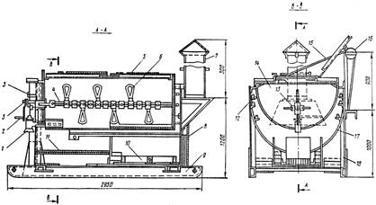
Рис. 1. Битумоварочный котел конструкции Союзспецстроя:
1 - кран; 2 - рукоятка; 3 - шестерня; 4 - вал; 5 - металлическая крышка;
6 - лопасти; 7 - дымовая труба; 8 - топка; 9 - салазки; 10 - колосниковые решетки;
11 - металлическая сетка; 12 - газовые трубы; 13 - горизонтальная мешалка;
14 - внутренние емкости; 15 - трос; 16 - блок; 17 - наружные емкости;
18 - опорные стойки
3. Технология приготовления битумной мастики должна включать:
измельчение нефтяного битума на куски размером 10 - 12 см;
дозировку битума в количествах, требуемых для заполнения котла на 3/4 его высоты;
загрузку котла битумом на 1/3 его высоты;
нагрев котла с указанным количеством битума и его обезвоживание;
загрузку в расплавленный, обезвоженный битум остального дозированного его количества;
форсированный нагрев обезвоженного битума до рабочей температуры;
дозировку пластифицирующей добавки индустриального масла и заливку его при вращающихся лопастях в котел - смеситель;
высушивание на электроплите с нагревом до 170 °С наполнителя асбеста № 7 (в необходимом случае) и дозировку его в количестве, требуемом на одну загрузку;
загрузку в котел при вращающихся лопастях необходимого количества указанного наполнителя.
4. Нагретая до температуры 170 °С битумная мастика однородной сметанообразной консистенции при отсутствии на ее поверхности пены считается готовой.
5. Битумная мастика может быть применена после проверки соответствия ее свойств требованиям табл. 1 настоящей Инструкции, предусмотренным для соответствующей марки.
6. Приготовленную битумную мастику транспортируют на тележках к месту гидроизоляционных работ в металлических расходных бачках, вместимостью до 25 л (летом) (рис. 2), а зимой - в термосах (рис. 2, б), наполненных на 3/4 их высоты.
Бачки и термосы должны иметь откидные, плотно закрывающиеся крышки и две ручки.
|
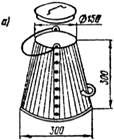 |
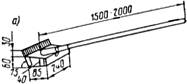
|
|
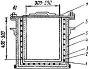 |
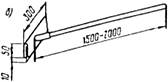 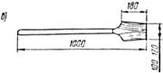 |
|
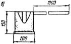 |
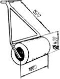 |
|
Рис. 2. Инвентарь для транспортировки битумной мастики: а - раздаточный бачок для работ а летних уровнях; б - электротермос для работ в зимних условиях; в - черпак для подлива мастик; 1 - цилиндрический сосуд из листовок стали d=2 мм; 2 - электроизолирующая обмазка; 3 - электронагревательная обмотка; 4 - теплоизоляция; 5 - кожух из листовой стали d=1,5 мм; 6 - ручка; 7 - крышка |
Рис. 3. Инвентарь дли нанесения, разравнивания мастики, прижима и прикатки изоляционного слоя: а - ковш - шпатель; б - гребок; в - шпатель - лопатка; г - каток |
7. Приготовленную битумную мастику следует наносить на изолируемую поверхность тонкой струей черпаком (рис. 2, а), перемещаемым в направлении ширины армирующего полотна, или ковшом (рис. 3, а), разравнивая нанесенный слой гребком (рис. 3, б) на участке поверхности длиной не более 0,5 м.
8. Наклеиваемое полотно следует тут же прижимать деревянным шпателем (рис. 3, в) или прикатывать катком массой от 80 до 100 кг с мягкой обкладкой (рис. 3, г).
ТЕХНИЧЕСКАЯ ХАРАКТЕРИСТИКА УСТАНОВКИ ГИПРОПРОМТРАНССТРОЯ ДЛЯ ПРИГОТОВЛЕНИЯ ТИОКОЛОВЫХ МАСТИК
1. В заводских условиях тиоколовые грунтовку и мастику можно изготавливать в установке Гипропромтрансстроя (см. рисунок), позволяющей уменьшить вредное влияние паров растворителя на работающих и повысить их производительность труда за счет исключения ручного труда.
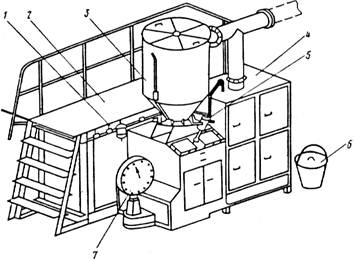
Установка для приготовления тиоколовых гидроизоляционных составов:
1 - приспособление для залипни растворителя в смесительную емкость;
2 - площадка для обслуживания установки с лестницей; 3 - бункер;
4 - вытяжной шкаф; 5 - трубопроводы с запорной арматурой;
6 - смесительная емкость; 7 - циферблатные платформенные весы ВЦП-25
2. Все узлы установки, за исключением смесительной емкости, смонтированы на металлическом каркасе, закрыты дверцами и съемными крышками.
Площадка для размещения обслуживающего персонала ограждена металлическими перилами.
3. Бункер установки имеет съемную крышку и кантователь для хранения и выгрузки из бидона тиоколовой пасты и подачи ее в смесительную емкость. Последняя вместе с расходными емкостями компонентов расположена в шкафу, предназначенном для перемешивания отдозированных компонентов приготавливаемой мастики или грунтовки.
Заливка растворителя автоматическая и функционирует под давлением сжатого воздуха, поступающего из воздушной магистрали.
Техническая характеристика
|
Производительность установки, кг/ч |
до 100 |
|
Вместимость емкостей, содержащих составляющие компоненты, л: |
|
|
бункера для основной пасты |
55 |
|
баллон для вулканизующей пасты |
10 |
|
бутыли для растворителя |
20 |
|
Вместимость смесителя, л |
8 - 10 |
|
Частота вращения вала лопастной мешалки на базе сверлильной машины ИЭ-1015, об/мин |
450 |
|
Мощность электродвигателя лопастной мешалки, кВт |
0,8 |
ТЕХНОЛОГИЧЕСКИЙ РЕГЛАМЕНТ ИЗГОТОВЛЕНИЯ РЕЗИНОВЫХ ЗАКЛАДНЫХ МАНЖЕТНЫХ ЭЛЕМЕНТОВ ДЛЯ СОПРЯЖЕНИЯ ГИДРОИЗОЛЯЦИИ С ВОДООТВОДНЫМИ И СТРОПОВОЧНЫМИ ТРУБКАМИ
1. Подготовка и обработка резиновой смеси
1.1. Резиновые закладные манжетные элементы (см. рисунок) должны быть изготовлены из сырой резины марки ИРП-1347, 6713 и 7 - 6620, а также из отходов полувулканизованного бутизола или гидробутила.
1.2. Изделие изготавливают из заранее взвешенной порции каучука, которая должна быть не менее 800 г.
1.3. Взвешенную порцию сырой резины обрабатывают на смесительных вальцах Ярославского завода. Диаметр вальцов 160, длина 320 мм. Для получения пластичной (при температуре плюс 35°С) полоски толщиной 4 - 5 мм вальцы должны быть нагреты до 50 °С, а обработка на них сырой резины должна длиться около 10 мин.
1.4. Резиновые манжетные элементы формуют в разборной пресс-форме, приведенной на рисунке конструкции.
Внутренние поверхности матрицы и остова формы перед формовкой в ней указанных элементов смазывают антиадгезивом-мыльной эмульсией.
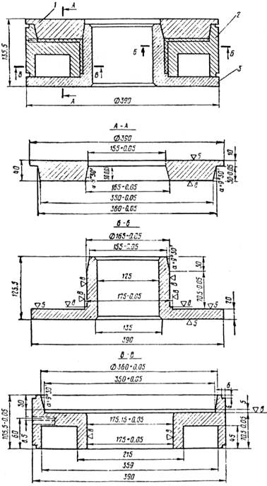
Пресс-форма для формовки манжетных элементов:
1 - пуансон; 2 - матрица; 3 - остов
1.5. Пресс-форму собирают путем установки матрицы 2 на остов 3.
1.6. Кольцевые жгуты, свернутые из отдельных полосок сырой резины, помещают на остов формы, перекрываемый накладываемым пуансоном 1.
1.7. Собранную пресс-форму, наполненную сырой резиной, устанавливают на обогреваемые плиты пресса.
1.8. Изделие формуют на гидравлическом прессе Д-2430Б массой 100 т. Давление повышают ступенями за 6 - 8 раз от 25 до 250 МПа (от 7,85 до 78 т). Прессован обеспечивает заполнение резиновой массой полости формы и удаление из нее воздуха.
1.9. Полное смыкание остова пресС-формы с пуансоном достигают при критической нагрузке 78 т, соответствующей давлению 25 МПа.
1.10. Пресс-форму с отформованным изделием нагревают до заданной температуры вулканизации плюс 140 - 145 °С.
1.11. Изделие в пресс-форме, нагретой до температуры плюс 140 - 145 °С, выдерживают в течение 30 мин под давлением не менее 20 МПа.
1.12. Пресс-форму снимают и отделяют от нее пуансон. Затем разъединяют остов с матрицей и извлекают готовое изделие.
2. Контроль качества изготовленного изделия
2.1. Толщину фланца и его цилиндра, вставляемого в раструб водоотводной трубки, замеряют микрометром.
2.2. Изделия замеряют металлической линейкой с делениями шкалы, позволяющей определять их высоту с точностью до 0,1 мм.
2.3. Монолитность отформованного изделия оценивают визуально, подсчитывая возможные пузырчатые вздутия и фиксируя их число и размер.
2.4. Наличие отверстий во фланце и цилиндре устанавливают путем просвета над настольной лампой, фиксируя их число и размер.
2.5. Резину изделия испытывают на образцах, вырубленных из фланца с помощью стандартных просечек.
2.6. Предел прочности резины при разрыве, относительное и остаточное ее удлинение определяют по ГОСТ 270-74.
2.7. Температуру хрупкости вырубленных образцов резины определяют по ГОСТ 7912-74.
2.8. Плотность резины устанавливают испытанием образцов по ГОСТ 267-60 гидростатическим методом взвешивания.
Агрегат предназначен для устройства битумной мастичной армированной гидроизоляции на проезжей части автомобильно - дорожных мостов с механизированной наклейкой армирующих материалов.
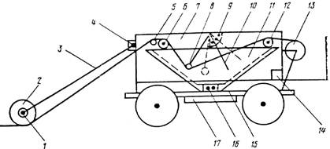
Агрегат для устройства битумной мастичной армированной гидроизоляции:
1 - отлив для головки паяльной лампы; 2 - каток; 3 - штанги; 4 - шарнир;
5, 6, 12 - направляющие валки; 7 - рама из уголка; 8 - прижимной барабан;
9 - сектор; 10 - рукоятка для прижатия барабана; 11 - емкость - термос;
13 - барабан с гидроизоляционной тканью; 14 - бачок с дизельным топливом;
15 - шасси; 16 - горелка; 17 - противовес
Агрегат (см. рисунок) смонтирован на раме автомобиля и включает емкость 11 типа термоса, установленную на шасси 15 со смещением в сторону на 25 см для того, чтобы при наклейке очередной полосы колеса движущего агрегата шли рядом с ранее наклеенной полосой.
На шасси размещены также размоточный 13 и прижимной 8 барабаны и каток 2.
Постоянная температура в емкости поддерживается горелкой 16, а каток подогревается паяльной лампой 1.
Вокруг емкости имеется трап с перилами.
___________
1 Конструкция А. Салькова и К. Галкина.
Техническая характеристика
|
Производительность, м2/см |
2500 (однослойного покрытия) |
|
Длина армирующего материала в барабане, м |
200 - 250 |
|
Толщина слоя мастики, мм |
2 - 3 |
|
Температура нагрева катка, °С |
100 - 120 |
Порядок производства работ
Наливают в емкость 11 готовую разогретую мастику и для поддержания ее рабочей температуры зажигают горелку 16;
прижимают рукояткой 10 барабан 8 с заранее намотанной тканью, которую протягивают валками 6 и 12 и погружают в мастику прижимным барабаном 8, оставляя непогруженным конец длиной 0,5 м, за который протягивают ткань до катка 2 и заводят под него, создав небольшое ее провисание;
приводят в движение агрегат и сматывают с барабана 13 ткань, погруженную в емкость с мастикой, которой она пропитывается и с помощью катка приклеивается на подготовленную поверхность.
ПРИГОТОВЛЕНИЕ И НАНЕСЕНИЕ ГОРЯЧЕЙ БИТУМНОЙ МАСТИКИ В УСЛОВИЯХ СТРОИТЕЛЬНОЙ ПЛОЩАДКИ
1. Битумные мастики, содержащие наполнитель, изготавливают, как указано в п. 3 приложения 4.
Битум для мастик, не содержащих наполнитель, при значительных объемах гидроизоляционных работ доставляют в горячем состоянии в автогудронаторах с битумно - раздаточных плавильных установок либо с нефтеналивных баз нефтеперерабатывающих заводов.
2. Битумно - раздаточные установки для плавления, обезвоживания и подогрева битума создают на строительной площадке и оборудуют их металлическими емкостями с внутренними жаровыми трубами при обогреве их форсунками, работающими на жидком дизельном топливе.
Емкости устанавливают на металлической раме на высоте не менее 2,5 м от уровня земли для возможности наполнения автогудронатора самотеком.
Загрузку емкостей битумно - раздаточной установки производят краном.
3. При плавлении битума в битумно - раздаточной установке котлы не должны быть чистыми (без коксового нагара на днище и стенках) и снабжены крышкой с откидной на шарнирах половиной, легко и быстро закрывающейся при случайной возможной вспышке битума.
Загружать котел следует битумом не более чем на 3/4 его высоты, при этом уровень битума должен быть выше зоны нагрева. Котел следует интенсивно нагревать после прекращения вспенивания массы, указывающей на полное удаление из нее влаги.
Битум, доведенный затем нагревом до 170 °С, является готовым компонентом для получения мастики в автогудронаторе.
4. Битумную мастику в автогудронаторе приготавливают следующим образом:
в резервуар автогудронатора, направляемого за получением очередной партии горячего битума, заливают заданное количество масла;
на битумно - раздаточной установке или наливном пункте НПЗ автогудронатор наполняют соответствующим количеством горячего битума;
битумную мастику однородного состава и свойств получают перемешиванием в течение 15 - 20 мин горячего битума и масла насосом системы обратной циркуляции гудронатора;
приготовленную битумную мастику периодически подогревают по заданной температуры имеющейся на автогудронаторе горелкой, работающей на жидком топливе не более 20 мин.
5. Водитель автогудронатора должен иметь право на его обслуживание. Перед выездом за битумом он должен убедиться в отсутствии в резервуаре влаги и наполнять его строго дозированными количествами масла и битума.
6. Подача битумной мастики производится по команде оператора - изолировщика после подсоединения к приемному трубопроводу гибкого шланга, закрепления на нем трубчатой щелевой насадки и его прогрева путем обратной циркуляции мастики в течение 5 мин через горловину автогудронатора.
7. По окончании работы резервуар автогудронатора и гибкий шланг освобождают от мастики; шланг промывают соляровым маслом и закрывают крышку люка резервуара.
8. Оператор - изолировщик обязан выставить около рабочей зоны знаки, предупреждающие об опасности. Он является единственным лицом, подающим команды водителю автогудронатора о начале и прекращении подачи битумной мастики.
Назначение
Воздушно - пропановые нагревательные горелки ГВПН и ГВПЛ предназначены для оплавления поверхности утяжеленного битумного рулонного материала при устройстве гидроизоляции без применения приклеивающих мастик. Горелки можно использовать также для удаления наледи и снега с изолируемой поверхности, а также ее подсушки.
Горелки должны отвечать требованиям технических условий ВНИИАв - тогенмаша.
Техническая характеристика горелок
|
|
ГВПН |
ГВЛЛ |
|
Производительность при оплавлении утяжеленного рулонного материала, м2/ч |
60 |
240 |
|
Расход пропана, м3/ч |
1,0 - 1,2 |
2,5 |
|
Давление пропана, МПа |
0,1 - 0,15 |
0,01 - 0,05 |
|
Количество факелов, шт. |
1 |
19 |
|
Длина, мм |
630 |
- |
|
Масса, кг |
1,5 |
11 |
Устройство и принцип работы
Однофакельная воздушно - пропановая нагревательная горелка ГВПН (см. рис. 12) работает на смеси пропан - бутана с воздухом, инжектируемым из атмосферы. Пропан - бутановая смесь из баллона через редуктор типа РД.1-БМ или ДПП-1-65 по резиновому шлангу подводится к ниппелю горелки под избыточным давлением 0,11 - 0,15 МПа и далее через регулировочный вентиль газа направляется в трубку наконечника.
Многофакельная горелка (ГВПЛ) (см. рис. 13) состоит из штуцера для присоединения запальника, запальника, распределительного коллектора, форсунок, опорных колес, ствола.
Пропан - бутановая смесь из баллона через регулятор давления ДПП-1-65 или РД.1-БМ и резиновый рукав с внутренним диаметром 9 мм (ГОСТ 9356-60, тип II) под давлением 0,01 - 0,05 МПа подводится к горелке. Основная часть пропана через ствольную трубку направляется в коллектор, в котором равномерно распределяется по форсункам дозирующими вставками нагревательных форсунок. Часть пропана от ствола отводится к запальнику.
Правила эксплуатации
Допущенные к работе с горелками ГВПН и ГВПЛ лица должны перед началом работы проверить горелки и убедиться в их исправности.
При обнаружении утечки газа она должна быть немедленно устранена следующими приемами:
в сальнике вентиля - подтягиванием сальниковой гайки или заменой сальникового кольца;
в шпинделе вентиля - зачисткой поверхности конуса мягкой наждачной бумагой;
в резьбовом соединении стабилизатора горелки ГВПН и дозирующего сопла горелки ГВПЛ - их подтягиванием;
у накладной гайки горелки ГВПН- заменой уплотнительного кольца смесительной камеры.
Для получения требуемого факела пламени необходимо:
установить на редукторе баллона рабочее давление, предусмотренное технической характеристикой для горелок ГВПН или ГВПЛ;
открыть у горелки ГВПН вентиль «дежурного пламени» на 1/2 оборота и зажечь газ у колпака горелки, открыть вентиль «основного пламени» до появления факела по контуру колпака;
открыть у горелки ГВПЛ вентиль запальника на 1/2 оборота и зажечь газ поднесением пламени к выходному отверстию запальника, открыть основной вентиль на 1/4 - 1/2 оборота и зажечь газ в форсунках запальником;
отрегулировать подачу газа до получения равномерного, устойчивого голубой окраски некоптящего факела пламени.
При неправильной форма факела пламени горелки следует погасить. У горелки ГВПН необходимо закрыть вентиль, продуть рассекательную вставку стабилизатора и прочистить зашлакованные в ней отверстия. У горелки ГВПЛ следует прочистить дозирующее отверстие сопла.
Прочищать загрязненные отверстия следует алюминиевой или медной проволокой диаметром 0,8 мм. Применение для очистки отверстий стальной проволоки не допускается.
Чтобы погасить пламя, необходимо:
у горелки ГВПН вначале закрыть вентиль «основного», а затем «дежурного» пламени;
у горелки ГВПЛ закрыть только вентиль на стволе.
По окончании работы необходимо выжечь пропан, находящийся в шланге, закрыть вентиль у баллона и вывернуть нажимной винт редуктора.
Горелки должны содержаться в чистоте; рассекатель и стабилизатор должны периодически очищаться от нагара и копоти.
ТЕХНИЧЕСКАЯ ХАРАКТЕРИСТИКА АГРЕГАТА ЦНИИС ДЛЯ БЕЗМАСТИЧНОЙ ПРИКЛЕЙКИ УТЯЖЕЛЕННЫХ РУЛОННЫХ МАТЕРИАЛОВ
Агрегат ЦНИИС (см. рис. 14) предназначен для высокопроизводительной приклейки утяжеленных рулонных материалов при устройстве гидроизоляции путем оплавления поверхности их покровного слоя, размотки рулонов и приклейки материала всей поверхностью к основанию или ранее уложенному слою с прикаткой.
Самоходный агрегат включает воздушно - пропановую нагревательную горелку ГВПЛ, узел размотки и укладки рулонного материала, тормозное устройство, фиксатор прямолинейного направления движения и поворотное устройство.
Техническая характеристика агрегата
|
Производительность, м2/см |
150 - 200 (однослойного покрытия) |
|
Запас укладываемого материала, рул. /кг |
4/140 |
|
Максимальная скорость перемещения, м/мин |
9,65 |
|
Ширина, см |
115 |
|
Масса прикатывающего катка, кг |
80 |
|
Габариты, м: |
|
|
длина |
1,745 |
|
ширина |
1,624 |
|
высота |
1,135 |
Правила эксплуатации
Гидроизоляцию с использованием агрегата ЦНИИС укладывают в следующем порядке:
агрегат устанавливают на рабочей полосе;
рулонный материал нанизывают на ось барабана, вставляемую в цапфодержатель;
конец полотна рулона пропускают между направляющими роликами и заправляют под прикатывающий каток;
каток опускают в рабочее положение и прижимают рулон к изолируемому основанию;
опускают горелку ГВПЛ в рабочее положение, зажигают запальник, а затем форсунки горелки;
включают рабочую скорость агрегата и при его движении оплавляют поверхность покровного слоя рулонного материала, одновременно подогревая огрунтованное основание или поверхность полотна ранее наклеенного слоя;
прикатывающим катком обеспечивают плотный прижим оплавленной поверхности полотна рулонного материала к основанию и прочную его приклейку.
ТЕХНИЧЕСКАЯ ХАРАКТЕРИСТИКА ИМПУЛЬСНОГО ПОЛОЗА ИП-1 И ОСНОВНЫЕ ПРАВИЛА ЕГО ЭКСПЛУАТАЦИИ
Импульсный полоз ИП-1 (см. рисунок) предназначен для сварки полиэтиленовой пленки при одностороннем контактном нагреве.
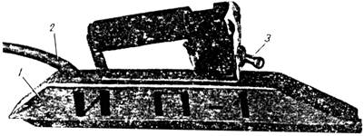
Импульсный полоз ИП - 1 для сварки полиэтиленовой пленки:
1 - сварочная головка; 2 - многожильный кабель; 3 - тумблер
Сварочная головка представляет собой корпус, внутри которого на изоляционной колодке размещен нагреватель - тонкая металлическая лента с высоким электрическим сопротивлением. В верхней части корпуса расположен тумблер с ручкой для включения и выключения нагрева.
Электрический ток от источника питания к полозу подается через понижающий трансформатор по многожильному кабелю длиной не менее 15 м.
Техническая характеристика
|
Потребляемая мощность, Вт |
250 |
|
Скорость сварки, м/мин |
2 - 10 |
|
Суммарная толщина свариваемых пленок, мкм |
От 200 до 400 |
|
Вид тока |
переменный |
|
Частота тока, Гц |
50 |
|
Рабочее напряжение, В |
36 |
|
Габаритные размеры, мм: |
50 |
|
длина |
336 |
|
ширина |
34 |
|
высота |
114 |
|
Масса (без подводящего кабеля), кг |
1 |
Правила эксплуатации
Перед началом работы следует проверить рабочее напряжение, надежность крепления всех деталей и состояние сварочной ленты.
Режим сварки (скорость и температура) подбирают путем пробной сварки образцов пленки.
Рабочие поверхности ленты периодически смазывают полиэтилсилоксановой жидкостью № 1 и 2 (ТУ МХП 2416 - 54) для исключения возможного прилипания к ней пленки.
В случае появления признаков прилипания пленки к ленте сварку следует остановить, поверхность ленты очистить от частиц полиэтилена и смазать полиэтилсилоксановой жидкостью.
Неисправности в полозе должны устраняться только при полностью отключенном питании.
В процессе сварки необходимо следить за исправным состоянием изоляции проводов, тумблера и штепсельных разъемов.
Во время работы корпус полоза должен быть обязательно заземлен. Надежность заземления перед началом работы необходимо проверить с помощью электролампы. Запрещается работа при снятой с полоза предохранительной крышке.
ИСПЫТАНИЕ ЗВЕНЬЕВ ЖЕЛЕЗОБЕТОННЫХ ВОДОПРОПУСКНЫХ ТРУБ НА СОПРОТИВЛЕНИЕ ПРОСАЧИВАНИЮ ВОДЫ 1
Звенья железобетонных водопропускных труб испытывают на сопротивление просачиванию воды сквозь стенки после достижения бетоном отпускной прочности бетона. Для испытания выборочно отбирают 4 звена от партии.
Испытания проводят следующим образом.
Отобранное для испытания звено устанавливают в вертикальном положении на поддон.
Внутренние размеры поддона в плане должны быть на 10 см более диаметра круглого (высоты и ширины прямоугольного) звена. Высота бортика поддона 15 см.
Звено в уровне опирания на поддон заливают горячим битумом слоем 10 см или герметизируют с помощью упругих прокладок, обжимаемых специальными приспособлениями.
Звено наполняют водой и наблюдают за его состоянием, отмечая потеки и мокрые пятна на поверхности звена через промежутки времени, указанные в табл. 1.
Таблица 1
|
Длина звена, м |
Время выдержки звена, ч, под гидростатическим давлением РН, кПа (кгс/см2), в уровне |
|||
|
верха звена |
низа звена |
|||
|
1 (0,01) |
10 (0,1) |
20 (0,2) |
30 (0,3) |
|
|
1 |
48 |
40 |
- |
- |
|
2 |
48 |
- |
30 |
- |
|
3 |
48 |
- |
- |
20 |
При наличии специального оборудования испытание звеньев на сопротивление просачиванию воды сквозь стенки проводят следующим образом.
Отобранное для испытания звено устанавливают в вертикальном положении, герметически закрывают с обоих концов заглушками с упругими прокладками, обжимаемыми специальными приспособлениями, и наполняют его водой. Затем повышают давление воды в нижней части звена до 50 кПа (0,5 кгс/см2).
Давление проверяют по манометру, устанавливаемому на линии напорного водовода (вблизи звена), в уровне нижней заглушки. Время выдержки звеньев под давлением воды определяют по табл. 2. Звено считают выдержавшим испытание на сопротивление просачиванию воды сквозь стенки, если после выдержки воды под давлением в течение времени, указанного в табл. 1 и 2, на наружной поверхности звена не будут обнаружены потеки или вытекание воды.
Если при испытании звеньев на их наружной поверхности будут обнаружены потеки или вытекание воды под давлением, испытания повторяют.
__________
1 Выдержки из ГОСТ 24547-81.
Таблица 2
|
Длина звена, м |
Время выдержки звена, ч, под давлением РН,кПа (кгс/см2), в уровне |
|||
|
верха звена |
низа звена |
|||
|
40 (0,4) |
30 (0,3) |
20 (0,2) |
50 (0,5) |
|
|
1 |
10 |
- |
- |
0,5 |
|
2 |
- |
20 |
- |
0,5 |
|
3 |
- |
- |
30 |
0,5 |
Повторные испытания по этому показателю проводят на удвоенном количестве звеньев той же партии. Если при повторном испытании хотя бы одно звено не будет удовлетворять предъявленным требованиям, то их следует принимать после поштучного испытания.
СОДЕРЖАНИЕ